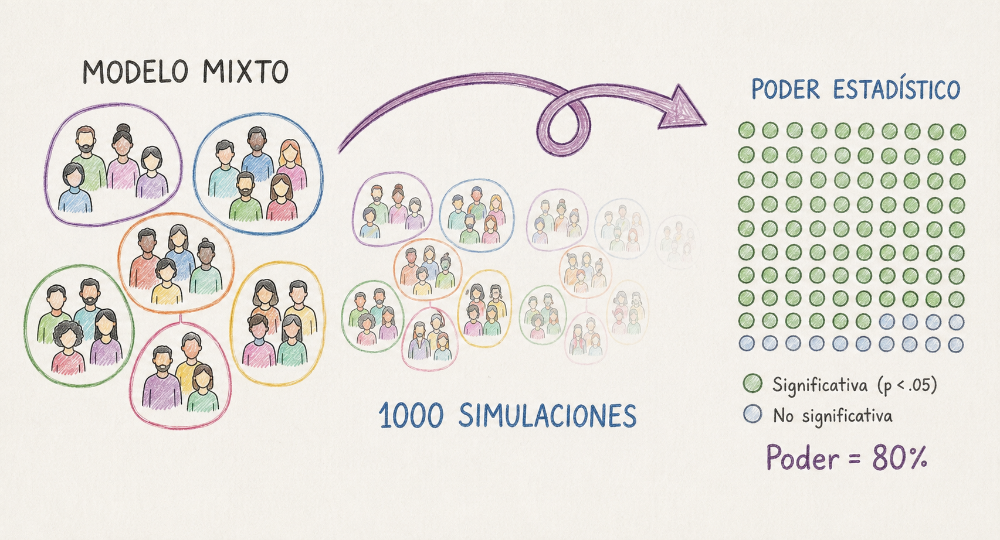
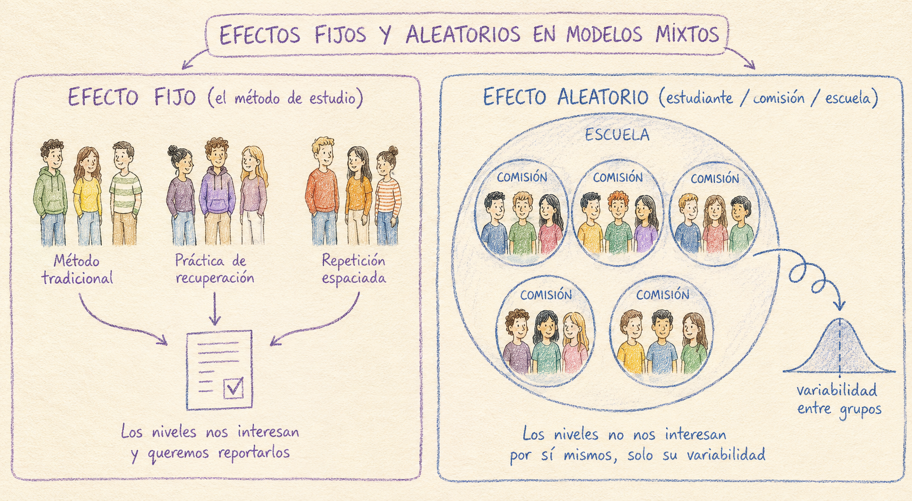
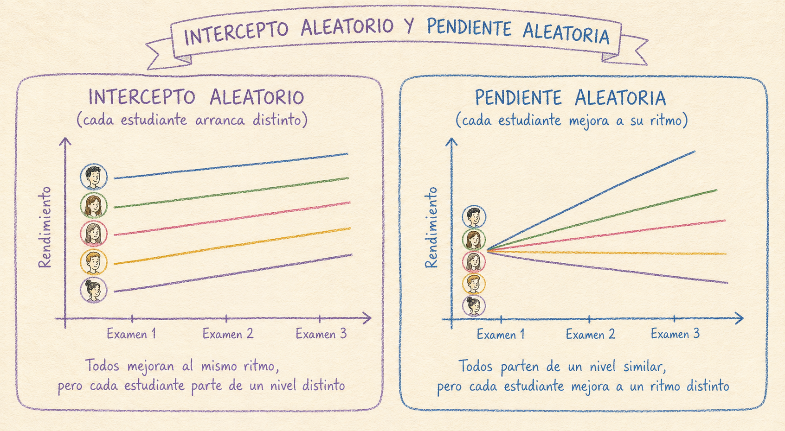

Retomando donde dejamos en la Parte 1 del tutorial
En la Parte 1 , calcular el poder era resolver una ecuación: dados \(\alpha\) , el tamaño del efecto (\(d\) , \(f\) , \(r\) o \(R^2\) ) y \(n\) , existe una expresión matemática exacta que despeja el cuarto valor. Eso funciona porque nuestro diseño incluía observaciones independientes y, por lo tanto, el modelo tenía una sola fuente de variación aleatoria . En nuestro ejemplo, queriamos conocer el efecto de 2 o 3 métodos de estudio distintos sobre el rendimiento de un grupo de estudiantes en un examen. Cada estudiante rindió el examen una vez, y utilizó un solo método de estudio, y esa fue toda la aleatoriedad que tuvimos que modelar. Bajo esas condiciones, el poder tiene una fórmula cerrada y paquetes como pwr o pwr2 la resuelven directamente.
Ahora imaginemos el mismo estudio, pero cada estudiante rinde el examen tres veces a lo largo del año, y además administramos la prueba en muchas comisiones distintas. Tenemos múltiples fuentes de variabilidad aleatoria :
Cuánto varían los estudiantes entre sí (algunos rinden mejor que otros en general).
Cuánto varía el ritmo de mejora de cada estudiante (algunos progresan más rápido que otros).
Cuánto varían las comisiones entre sí (una comisión puede rendir mejor que otra en general, por ejemplo, por efecto del/de la docente).
y cuánto varía cada estudiante examen a examen, más allá de todo lo anterior.
Para saber si vamos a detectar la diferencia entre métodos, ya no alcanza con comparar “la diferencia entre grupos” contra “un solo desvío estándar”, como hacía la \(d\) de Cohen. Ahora esa diferencia entre métodos tiene que abrirse paso a través de cuatro fuentes de variabilidad superpuestas, y cada una empuja el resultado en una dirección distinta. No hay una manera de combinar esas cuatro cosas en un único número y meterlo en una fórmula, como sí podíamos hacer con \(d\) o \(f\) .
Entonces ¿qué hacemos?. Antes de meternos de lleno con el método, definamos algunas cuestiones clave.
¿Cuándo necesito un modelo mixto?
La señal más clara de que necesitás un modelo mixto es que tus observaciones no son todas independientes entre sí . Dicho de otra forma, necesitás un modelo mixto si sabér el valor de una observación te da información sobre otra observación del mismo grupo, aunque el valor en la variable de interés (en este caso, método de estudio) sea distinto. Esto sucede típicamente en dos situaciones que muchas veces se combinan.
1. Medidas repetidas
Supongamos que, en lugar de que cada estudiante rinda el examen una sola vez, le pedimos que lo rinda tres veces a lo largo del cuatrimestre, para ver si el método de estudio mejora el desempeño con el tiempo. Ahora tenemos 3 observaciones por estudiante, y esas 3 observaciones (¡esto es lo importante!) se parecen más entre sí que las observaciones de dos estudiantes distintos . Un estudiante que rinde bien en el primer examen probablemente también rinda relativamente bien en el segundo y el tercero, más allá del método de estudio que le tocó. De igual forma, un estudiante que rinde mal en el primer examen, probablemente también rinda relativamente mal en los otros dos.
Si tuvieramos 40 estudiantes, cada uno evaluado 3 veces, y tomaramos las 120 medidas resultantes como si fueran independientes, estaríamos inflando artificialmente el tamaño de la muestra y, con eso, subestimando el error real de nuestras estimaciones.
2. Datos anidados o jerárquicos
Otra situación frecuente es que las observaciones no sean totalmente independientes porque algunas se parecen más entre sí que otras. Por ejemplo, si los estudiantes se encuentran agrupados en comisiones, y las comisiones en escuelas. Dos estudiantes de la misma comisión comparten un mismo profesor, el mismo horario, el mismo clima de aula. Eso genera una correlación entre sus puntajes que no tiene nada que ver con el método de estudio que estamos evaluando, pero que sí afecta cuánta información nueva aporta cada estudiante adicional.
A este problema se lo conoce como pseudorreplicación , tratar observaciones correlacionadas como si fueran réplicas independientes. El resultado práctico es un error de tipo I inflado: vas a “encontrar” efectos significativos con más frecuencia de la que tu \(\alpha\) nominal promete, porque el análisis cree que tiene más información independiente de la que realmente tiene.
El denominador común
En ambos casos (medidas repetidas y datos anidados) el problema es el mismo. Hay más de una fuente de variación aleatoria operando al mismo tiempo. En la Parte 1 la única aleatoriedad era estudiante a estudiante, dentro de un mismo método de estudio. Ahora se le suma, por ejemplo, “examen a examen dentro del mismo estudiante” o “estudiante a estudiante dentro de la misma comisión”. Un modelo que no distingue estas fuentes de variación va a atribuir toda la variabilidad a una sola cosa, y las estimaciones de error van a ser incorrectas.
Los modelos mixtos están diseñados justamente para estos casos. Le permiten al modelo separar la variación “dentro de un grupo” (por ejemplo, entre exámenes de un mismo estudiante) de la variación “entre grupos” (entre estudiantes, entre comisiones, entre escuelas), en lugar de mezclarlas todas en un único término de error.
Efectos fijos y efectos aleatorios
En un modelo mixto, cada variable se clasifica como efecto fijo o efecto aleatorio .
Un efecto fijo es una variable cuyos niveles nos interesan específicamente y que quisiéramos reportar como tales. En nuestro ejemplo, el método de estudio (tradicional, práctica de recuperación, repetición espaciada) es un efecto fijo. Es exactamente el mismo tipo de variable que ya veníamos usando en la Parte 1 con pwr.anova.test() o pwr.f2.test().
Un efecto aleatorio es una variable que agrupa las observaciones, cuyos niveles específicos no nos interesan por sí mismos pero pueden ser fuente de variabilidad que afecte la estimación que queremos hacer. La variabilidad propia del estudiante (si tenemos medidas repetidas), o la de la comisión o la escuela particular (si nuestros datos están anidados) no son el objeto de nuestra pregunta de investigación, pero necesitamos cuantificarla para poder distinguirla de la variabilidad introducida por la variable que nos interesa realmente.

Entonces:
Si tenemos medidas repetidas el estudiante es un efecto aleatorio. Cada estudiante rinde el examen tres veces, y ese agrupamiento (hay tres observaciones que pertenecen a la misma persona) es lo que el modelo necesita tener en cuenta.
Si tenemos datos anidados , tanto la comisión como la escuela son efectos aleatorios. Los estudiantes están anidados dentro de comisiones, y las comisiones dentro de escuelas.
Incorporar una variable al análisis como efecto fijo o aleatorio determina qué inferencia podemos hacer con ella: sobre un efecto fijo estimamos y probamos una hipótesis puntual (¿difiere el método de estudio tradicional de la práctica de recuperación?); sobre uno aleatorio solo cuantificamos cuánta variabilidad aporta, sin testear niveles específicos.
Intercepto aleatorio vs. pendiente aleatoria
Dentro de los efectos aleatorios hay todavía una distinción más para tener en cuenta, porque afecta directamente cómo vamos a modelar los datos:
Un intercepto aleatorio por estudiante permite que cada estudiante tenga su propio nivel promedio de partida (algunos estudiantes rinden mejor en general y otros rinden peor, más allá del método), pero asume que el efecto del método de estudio es el mismo para todos.
Una pendiente aleatoria permite además que el efecto de una variable (por ejemplo, cómo cambia el puntaje entre el primer y el tercer examen) varíe de estudiante a estudiante: algunos mejoran más rápido con la repetición espaciada que otros.

La lógica de la simulación de datos
Como no podemos despejar el poder de una fórmula, lo estimamos por fuerza bruta: simulamos muchas veces cómo se vería el experimento si el efecto que suponemos fuera cierto, y contamos en qué proporción de esas simulaciones el análisis efectivamente detecta el efecto. Esa proporción, con suficientes repeticiones, es una estimación del poder.
El procedimiento general es:
Especificar el modelo completo , con valores concretos para todos los efectos fijos y todos los componentes de varianza aleatoria.
Simular un dataset completo a partir de ese modelo: para cada estudiante, cada comisión, cada examen, generar un puntaje simulado que sea consistente con los efectos fijos y aleatorios que especificamos.
Ajustar el modelo mixto real sobre ese dataset simulado, y anotar si el efecto de interés (el método de estudio) resulta estadísticamente significativo o no.
Repetir los pasos 2 y 3 muchas veces (típicamente cientos), y calcular la proporción de repeticiones en las que el efecto resultó significativo. Por ejemplo, si en 1000 simulaciones 80% mostraron un efecto significativo del método de estudio, el poder es 80%.
Cálculo del poder con R
Vamos a poner en práctica los cuatro pasos para el siguiente diseño: el método de estudio es asignado por comisión, no por estudiante. Cada comisión usa un solo método. Además, cada estudiante es evaluado 3 veces. También asumimos que el progreso no será equivalente en cada participante, por lo que incluiremos una pendiente aleatoria.
Para ello vamos a usar el paquete lme4 (Bates et al. 2015 ) para especificar el modelo mixto, y simr (Green y MacLeod 2016 ) para simular datos a partir de ese modelo y estimar el poder.
# install.packages(c("lme4", "simr")) library (lme4)
Loading required package: Matrix
Registered S3 method overwritten by 'car':
method from
na.action.merMod lme4
Attaching package: 'simr'
The following object is masked from 'package:lme4':
getData
Attaching package: 'dplyr'
The following objects are masked from 'package:stats':
filter, lag
The following objects are masked from 'package:base':
intersect, setdiff, setequal, union
Creamos la estructura de los datos
simr necesita un data.frame con la estructura completa del diseño (todas las combinaciones de comisión, estudiante y examen), aunque los puntajes todavía no existan, se los va a inventar la simulación. Armamos 6 comisiones (2 por método), 8 estudiantes por comisión y 3 exámenes por estudiante:
<- 6 <- 8 <- 3 <- rep (c ("tradicional" , "recuperacion" , "espaciada" ), each = 2 )
[1] "tradicional" "tradicional" "recuperacion" "recuperacion" "espaciada"
[6] "espaciada"
<- 1 : n_comisiones # ID de cada comisión <- rep (comision_id, each = n_estudiantes_por_comision) # Creamos a los estudiantes
[1] 1 1 1 1 1 1 1 1 2 2 2 2 2 2 2 2 3 3 3 3 3 3 3 3 4 4 4 4 4 4 4 4 5 5 5 5 5 5
[39] 5 5 6 6 6 6 6 6 6 6
<- rep (metodo_por_comision, each = n_estudiantes_por_comision) # Creamos al vector de método por estudiante
[1] "tradicional" "tradicional" "tradicional" "tradicional" "tradicional"
[6] "tradicional" "tradicional" "tradicional" "tradicional" "tradicional"
[11] "tradicional" "tradicional" "tradicional" "tradicional" "tradicional"
[16] "tradicional" "recuperacion" "recuperacion" "recuperacion" "recuperacion"
[21] "recuperacion" "recuperacion" "recuperacion" "recuperacion" "recuperacion"
[26] "recuperacion" "recuperacion" "recuperacion" "recuperacion" "recuperacion"
[31] "recuperacion" "recuperacion" "espaciada" "espaciada" "espaciada"
[36] "espaciada" "espaciada" "espaciada" "espaciada" "espaciada"
[41] "espaciada" "espaciada" "espaciada" "espaciada" "espaciada"
[46] "espaciada" "espaciada" "espaciada"
<- 1 : (n_comisiones * n_estudiantes_por_comision) # Creamos el ID de cada estudiante <- factor (rep (comision_estudiante, each = n_examenes))<- factor (rep (metodo_estudiante, each = n_examenes),levels = c ("tradicional" , "recuperacion" , "espaciada" ))<- factor (rep (estudiante_id, each = n_examenes))<- rep (0 : 2 , times = n_comisiones * n_estudiantes_por_comision)<- data.frame (comision, metodo, estudiante, numero_examen)head (datos, n = 10 ) # Primeras 10 filas del data frame
comision metodo estudiante numero_examen
1 1 tradicional 1 0
2 1 tradicional 1 1
3 1 tradicional 1 2
4 1 tradicional 2 0
5 1 tradicional 2 1
6 1 tradicional 2 2
7 1 tradicional 3 0
8 1 tradicional 3 1
9 1 tradicional 3 2
10 1 tradicional 4 0
Especificamos el modelo con makeLmer()
Usamos notación de Bates et al. (2015 ) para definir nuestro modelo:
puntaje ~ metodo * numero_examen + (1 + numero_examen | estudiante) + (1 | comision)
puntajemetodo * numero_examen* es una forma abreviada de escribir metodo + numero_examen + metodo:numero_examen: incluimos el efecto de cada variable por separado, y también su interacción porque suponemos que la progresión entre el primer y el último examen no es igual para los tres métodos.(1 + numero_examen | estudiante)1) más pendiente aleatoria de numero_examen.(1 | comision)
Nos importa saber el tipo de cada variable para saber cómo se interpreta el modelo:
numero_examen es numérica (0, 1, 2): R la trata como una pendiente continua, un único coeficiente que representa cuánto sube el puntaje por cada examen adicional. Usamos 0, 1 y 2 en lugar de 1, 2 y 3 para que el intercepto del modelo coincida con el primer examen.metodo es categórica , con 3 niveles (tradicional, recuperación, espaciada). R no le asigna un coeficiente a cada nivel; en cambio, toma uno como referencia. Toma el que pusimos primero al definir los niveles del modelo (levels = c("tradicional", "recuperacion", "espaciada")) y estima diferencias respecto a esa referencia para los otros dos.
¿Y qué es el intercepto, entonces? el puntaje esperado cuando todas las variables están en su valor de referencia. Como numero_examen = 0 es el examen 1, y tradicional es el nivel de referencia de metodo, el intercepto es la media del examen 1 para el método tradicional .
Con eso en mente, los seis coeficientes del modelo se leen así:
(Intercept)Puntaje esperado en el examen 1, método tradicional
68.5
metodorecuperacionCuánto más alto arranca recuperación, respecto a tradicional, en el examen 1
73 - 68.5 = 4.5
metodoespaciadaCuánto más alto arranca espaciada, respecto a tradicional, en el examen 1
77.5 - 68.5 = 9
numero_examenCuánto mejora el puntaje por examen, en el método tradicional
2
metodorecuperacion:numero_examenCuánto más rápido (o lento) mejora recuperación, respecto a tradicional, por examen
1
metodoespaciada:numero_examenCuánto más rápido (o lento) mejora espaciada, respecto a tradicional, por examen
3
Especificar el modelo completo implica, entre otras cosas, asignarles valores concretos a todos los coeficientes de esta tabla (los efectos fijos). ¿De donde salen estos valores? Al igual que en la Parte 1 del tutorial, los valores se extraen de los resultados obtenidos de un estudio piloto, o de estudios previos reportados en la bibliografía. En el caso de nuestro ejemplo, seguimos usando las medias del examen 1 de la Parte 1 (método tradicional: 68.5 / recuperación: 73 / repetición espaciada: 77.5), y le sumamos una hipótesis sobre el ritmo de mejora de cada método: asumimos que la recuperación y la repetición espaciada no solo empiezan más altas que el método tradicional, sino que mejoran más rápido examen a examen. Quienes utilizan el método tradicional mejoran en promedio 2 puntos por examen. Quienes utilizan la recuperación mejoran 1 punto más por examen que quienes usan el método tradicional y quienes usan la repetición espaciada 3 puntos más.
# Efectos fijos <- c (68.5 , 4.5 , 9.0 , 2 , 1 , 3 )# Matriz de varianza y covarianza del intercepto y la pendiente aleatoria por estudiante <- matrix (c (64 , 0 ,0 , 2.25 ), nrow = 2 ) # Varianza del intercepto aleatorio por comisión <- 16 # Desvío residual (examen a examen, dentro del propio estudiante) <- 6
También tenemos que indicar la matríz de varianza y covarianza del intercepto y la pendiente aleatoria por estudiante . Es una matriz de 2x2 porque estudiante tiene dos efectos aleatorios: intercepto (1) y pendiente de numero_examen. La diagonal son las varianzas: le asigno un desvió estándar de 8 (varianza = \(8^2\) = 64) a la variación entre estudiantes en su nivel de partida (algunos estudiantes rinden mejor que otros en el examen 1, más allá del método) y un desvío estándar de 1.5 (varianza = \(1.5^2\) = 2.25 a la variación entre estudiante en su ritmo de mejora). Fuera de la diagonal va la covarianza entre ambos: asumimos que el nivel de partida de un estudiante no predice qué tan rápido va a mejorar, por lo tengo le asignamos 0. La varianza asociada a la comisión es un único número porque comisión tiene un único efecto aleatorio en nuestro modelo, el intercepto. Suponemos un desvío de 4, una varianza de 16. Finalmente, el sigma residual es el devío del “ruido” que queda despues de descontar el efecto del método, la tendencia general y las desviaciones propias de cada estudiante y cada comisión. La variabilidad de cada examen puntual que no se explica por nada sistemático (por ejemplo, si tuvo un buen o un mal día el estudiante).
Con todos esos valores definidos, ya podemos simular nuestro modelo con makeLmer().
<- makeLmer (~ metodo * numero_examen + (1 + numero_examen | estudiante) + (1 | comision),fixef = fixef_vals,VarCorr = list (var_estudiante, var_comision),sigma = sigma_residual,data = datosprint (modelo)
Linear mixed model fit by REML ['lmerMod']
Formula: puntaje ~ metodo * numero_examen + (1 + numero_examen | estudiante) +
(1 | comision)
Data: datos
REML criterion at convergence: 1012.439
Random effects:
Groups Name Std.Dev. Corr
estudiante (Intercept) 8.0
numero_examen 1.5 0.00
comision (Intercept) 4.0
Residual 6.0
Number of obs: 144, groups: estudiante, 48; comision, 6
Fixed Effects:
(Intercept) metodorecuperacion
68.5 4.5
metodoespaciada numero_examen
9.0 2.0
metodorecuperacion:numero_examen metodoespaciada:numero_examen
1.0 3.0
Calculamos el poder para nuestro diseño con powerSim()
La pregunta concreta que nos interesa es si la repetición espaciada mejora más rápido, examen a examen, que el método tradicional . Eso es exactamente el coeficiente metodoespaciada:numero_examen del modelo.
set.seed (222 ) # para que puedas reproducir el ejemplo <- fixed ("metodoespaciada:numero_examen" , "z" )<- powerSim (modelo, test = prueba_interaccion, nsim = 100 )
Simulating: | |��������������������������������������������������������������������������������Simulating: |= |��������������������������������������������������������������������������������Simulating: |== |��������������������������������������������������������������������������������Simulating: |=== |��������������������������������������������������������������������������������Simulating: |==== |��������������������������������������������������������������������������������Simulating: |===== |��������������������������������������������������������������������������������Simulating: |====== |��������������������������������������������������������������������������������Simulating: |======= |��������������������������������������������������������������������������������Simulating: |======== |��������������������������������������������������������������������������������Simulating: |========= |��������������������������������������������������������������������������������Simulating: |========== |��������������������������������������������������������������������������������Simulating: |=========== |��������������������������������������������������������������������������������Simulating: |============ |��������������������������������������������������������������������������������Simulating: |============= |��������������������������������������������������������������������������������Simulating: |============== |��������������������������������������������������������������������������������Simulating: |=============== |��������������������������������������������������������������������������������Simulating: |================ |��������������������������������������������������������������������������������Simulating: |================= |��������������������������������������������������������������������������������Simulating: |================== |��������������������������������������������������������������������������������Simulating: |=================== |��������������������������������������������������������������������������������Simulating: |==================== |��������������������������������������������������������������������������������Simulating: |===================== |��������������������������������������������������������������������������������Simulating: |====================== |��������������������������������������������������������������������������������Simulating: |======================= |��������������������������������������������������������������������������������Simulating: |======================== |��������������������������������������������������������������������������������Simulating: |========================= |��������������������������������������������������������������������������������Simulating: |========================== |��������������������������������������������������������������������������������Simulating: |=========================== |��������������������������������������������������������������������������������Simulating: |============================ |��������������������������������������������������������������������������������Simulating: |============================= |��������������������������������������������������������������������������������Simulating: |============================== |��������������������������������������������������������������������������������Simulating: |=============================== |��������������������������������������������������������������������������������Simulating: |================================ |��������������������������������������������������������������������������������Simulating: |================================= |��������������������������������������������������������������������������������Simulating: |================================== |��������������������������������������������������������������������������������Simulating: |=================================== |��������������������������������������������������������������������������������Simulating: |==================================== |��������������������������������������������������������������������������������Simulating: |===================================== |��������������������������������������������������������������������������������Simulating: |====================================== |��������������������������������������������������������������������������������Simulating: |======================================= |��������������������������������������������������������������������������������Simulating: |======================================== |��������������������������������������������������������������������������������Simulating: |========================================= |��������������������������������������������������������������������������������Simulating: |========================================== |��������������������������������������������������������������������������������Simulating: |=========================================== |��������������������������������������������������������������������������������Simulating: |============================================ |��������������������������������������������������������������������������������Simulating: |============================================= |��������������������������������������������������������������������������������Simulating: |============================================== |��������������������������������������������������������������������������������Simulating: |=============================================== |��������������������������������������������������������������������������������Simulating: |================================================ |��������������������������������������������������������������������������������Simulating: |================================================= |��������������������������������������������������������������������������������Simulating: |================================================== |��������������������������������������������������������������������������������Simulating: |=================================================== |��������������������������������������������������������������������������������Simulating: |==================================================== |��������������������������������������������������������������������������������Simulating: |===================================================== |��������������������������������������������������������������������������������Simulating: |====================================================== |��������������������������������������������������������������������������������Simulating: |======================================================= |��������������������������������������������������������������������������������Simulating: |======================================================== |��������������������������������������������������������������������������������Simulating: |========================================================= |��������������������������������������������������������������������������������Simulating: |========================================================== |��������������������������������������������������������������������������������Simulating: |=========================================================== |��������������������������������������������������������������������������������Simulating: |============================================================ |��������������������������������������������������������������������������������Simulating: |============================================================= |��������������������������������������������������������������������������������Simulating: |============================================================== |��������������������������������������������������������������������������������Simulating: |=============================================================== |��������������������������������������������������������������������������������Simulating: |================================================================ |��������������������������������������������������������������������������������Simulating: |================================================================= |��������������������������������������������������������������������������������Simulating: |==================================================================|��������������������������������������������������������������������������������
Power for predictor 'metodoespaciada:numero_examen', (95% confidence interval):
50.00% (39.83, 60.17)
Test: z-test
Effect size for metodoespaciada:numero_examen is 3.0
Based on 100 simulations, (0 errors, 2 warnings, 48 messages)
Time elapsed: 0 h 0 m 5 s
Con las 6 comisiones (48 estudiantes, 144 observaciones), el poder ronda el 50% , muy por debajo del 80% que buscamos. Para poner a prueba la hipótesis que nos interesa, con un diseño así de chico no alcanza.
¿Cuántas simulaciones hacer? En este tutorial usamos nsim = 100 para que los ejemplos corran rápido, pero no es el valor que deberías usar en un análisis real . El propio valor por default de powerSim() y powerCurve() en simr es nsim = 1000 (Green y MacLeod 2016), y esa no es una casualidad: cada estimación de poder es, en el fondo, una proporción (cuántas de las nsim simulaciones dieron un resultado significativo), y como toda proporción estimada por simulación, tiene su propio error de muestreo.
Ese error se puede calcular directamente: el error estándar de una proporción es \(\sqrt{p(1-p)/n_{sim}}\) . Con un poder real cercano a 80% y nsim = 100, ese error estándar ronda los 4 puntos porcentuales, lo que da un intervalo de confianza del 95% de casi 16 puntos de ancho. Con nsim = 1000, ese mismo error estándar baja a poco más de 1 punto porcentual, y el intervalo se angosta a menos de 5 puntos.
En la práctica: para explorar el diseño y tener una primera idea (como venimos haciendo en este tutorial), nsim = 100 alcanza. Para un número que vayas a poner en un protocolo, un pre-registro o un pedido de financiamiento, corré la versión final con nsim = 1000 o más.
Extendemos el diseño y trazamos la curva de poder
La pregunta real de investigación no es “¿nos alcanzan 6 comisiones de 8 alumnos cada una?” sino “¿cuántas comisiones/estudiantes necesitamos?”. Para esto, usamos extend() que nos permite escalar el diseño en alguna de esas dimensiones manteniendo la misma estructura. Probemos extender el número de comisiones, manteniedo los 8 estudiantes por comisión, 3 exámenes:
<- extend (modelo, along = "comision" , n = 30 )<- powerCurve (test = prueba_interaccion,along = "comision" ,breaks = c (6 , 10 , 14 , 18 , 22 , 26 , 30 ), # Distintas cantidades de comisiones nsim = 100
Calculating power at 7 sample sizes along comision
Simulating: | |��������������������������������������������������������������������������������Simulating: |= |��������������������������������������������������������������������������������Simulating: |== |��������������������������������������������������������������������������������Simulating: |=== |��������������������������������������������������������������������������������Simulating: |==== |��������������������������������������������������������������������������������Simulating: |===== |��������������������������������������������������������������������������������Simulating: |====== |��������������������������������������������������������������������������������Simulating: |======= |��������������������������������������������������������������������������������Simulating: |======== |��������������������������������������������������������������������������������Simulating: |========= |��������������������������������������������������������������������������������Simulating: |========== |��������������������������������������������������������������������������������Simulating: |=========== |��������������������������������������������������������������������������������Simulating: |============ |��������������������������������������������������������������������������������Simulating: |============= |��������������������������������������������������������������������������������Simulating: |============== |��������������������������������������������������������������������������������Simulating: |=============== |��������������������������������������������������������������������������������Simulating: |================ |��������������������������������������������������������������������������������Simulating: |================= |��������������������������������������������������������������������������������Simulating: |================== |��������������������������������������������������������������������������������Simulating: |=================== |��������������������������������������������������������������������������������Simulating: |==================== |��������������������������������������������������������������������������������Simulating: |===================== |��������������������������������������������������������������������������������Simulating: |====================== |��������������������������������������������������������������������������������Simulating: |======================= |��������������������������������������������������������������������������������Simulating: |======================== |��������������������������������������������������������������������������������Simulating: |========================= |��������������������������������������������������������������������������������Simulating: |========================== |��������������������������������������������������������������������������������Simulating: |=========================== |��������������������������������������������������������������������������������Simulating: |============================ |��������������������������������������������������������������������������������Simulating: |============================= |��������������������������������������������������������������������������������Simulating: |============================== |��������������������������������������������������������������������������������Simulating: |=============================== |��������������������������������������������������������������������������������Simulating: |================================ |��������������������������������������������������������������������������������Simulating: |================================= |��������������������������������������������������������������������������������Simulating: |================================== |��������������������������������������������������������������������������������Simulating: |=================================== |��������������������������������������������������������������������������������Simulating: |==================================== |��������������������������������������������������������������������������������Simulating: |===================================== |��������������������������������������������������������������������������������Simulating: |====================================== |��������������������������������������������������������������������������������Simulating: |======================================= |��������������������������������������������������������������������������������Simulating: |======================================== |��������������������������������������������������������������������������������Simulating: |========================================= |��������������������������������������������������������������������������������Simulating: |========================================== |��������������������������������������������������������������������������������Simulating: |=========================================== |��������������������������������������������������������������������������������Simulating: |============================================ |��������������������������������������������������������������������������������Simulating: |============================================= |��������������������������������������������������������������������������������Simulating: |============================================== |��������������������������������������������������������������������������������Simulating: |=============================================== |��������������������������������������������������������������������������������Simulating: |================================================ |��������������������������������������������������������������������������������Simulating: |================================================= |��������������������������������������������������������������������������������Simulating: |================================================== |��������������������������������������������������������������������������������Simulating: |=================================================== |��������������������������������������������������������������������������������Simulating: |==================================================== |��������������������������������������������������������������������������������Simulating: |===================================================== |��������������������������������������������������������������������������������Simulating: |====================================================== |��������������������������������������������������������������������������������Simulating: |======================================================= |��������������������������������������������������������������������������������Simulating: |======================================================== |��������������������������������������������������������������������������������Simulating: |========================================================= |��������������������������������������������������������������������������������Simulating: |========================================================== |��������������������������������������������������������������������������������Simulating: |=========================================================== |��������������������������������������������������������������������������������Simulating: |============================================================ |��������������������������������������������������������������������������������Simulating: |============================================================= |��������������������������������������������������������������������������������Simulating: |============================================================== |��������������������������������������������������������������������������������Simulating: |=============================================================== |��������������������������������������������������������������������������������Simulating: |================================================================ |��������������������������������������������������������������������������������Simulating: |================================================================= |��������������������������������������������������������������������������������Simulating: |==================================================================|��������������������������������������������������������������������������������(1/7) ������(1/7) Simulating: | |��������������������������������������������������������������������������������(1/7) Simulating: |= |��������������������������������������������������������������������������������(1/7) Simulating: |== |��������������������������������������������������������������������������������(1/7) Simulating: |=== |��������������������������������������������������������������������������������(1/7) Simulating: |==== |��������������������������������������������������������������������������������(1/7) Simulating: |===== |��������������������������������������������������������������������������������(1/7) Simulating: |====== |��������������������������������������������������������������������������������(1/7) Simulating: |======= |��������������������������������������������������������������������������������(1/7) Simulating: |======== |��������������������������������������������������������������������������������(1/7) Simulating: |========= |��������������������������������������������������������������������������������(1/7) Simulating: |========== |��������������������������������������������������������������������������������(1/7) Simulating: |=========== |��������������������������������������������������������������������������������(1/7) Simulating: |============ |��������������������������������������������������������������������������������(1/7) Simulating: |============= |��������������������������������������������������������������������������������(1/7) Simulating: |============== |��������������������������������������������������������������������������������(1/7) Simulating: |=============== |��������������������������������������������������������������������������������(1/7) Simulating: |================ |��������������������������������������������������������������������������������(1/7) Simulating: |================= |��������������������������������������������������������������������������������(1/7) Simulating: |================== |��������������������������������������������������������������������������������(1/7) Simulating: |=================== |��������������������������������������������������������������������������������(1/7) Simulating: |==================== |��������������������������������������������������������������������������������(1/7) Simulating: |===================== |��������������������������������������������������������������������������������(1/7) Simulating: |====================== |��������������������������������������������������������������������������������(1/7) Simulating: |======================= |��������������������������������������������������������������������������������(1/7) Simulating: |======================== |��������������������������������������������������������������������������������(1/7) Simulating: |========================= |��������������������������������������������������������������������������������(1/7) Simulating: |========================== |��������������������������������������������������������������������������������(1/7) Simulating: |=========================== |��������������������������������������������������������������������������������(1/7) Simulating: |============================ |��������������������������������������������������������������������������������(1/7) Simulating: |============================= |��������������������������������������������������������������������������������(1/7) Simulating: |============================== |��������������������������������������������������������������������������������(1/7) Simulating: |=============================== |��������������������������������������������������������������������������������(1/7) Simulating: |================================ |��������������������������������������������������������������������������������(1/7) Simulating: |================================= |��������������������������������������������������������������������������������(1/7) Simulating: |================================== |��������������������������������������������������������������������������������(1/7) Simulating: |=================================== |��������������������������������������������������������������������������������(1/7) Simulating: |==================================== |��������������������������������������������������������������������������������(1/7) Simulating: |===================================== |��������������������������������������������������������������������������������(1/7) Simulating: |====================================== |��������������������������������������������������������������������������������(1/7) Simulating: |======================================= |��������������������������������������������������������������������������������(1/7) Simulating: |======================================== |��������������������������������������������������������������������������������(1/7) Simulating: |========================================= |��������������������������������������������������������������������������������(1/7) Simulating: |========================================== |��������������������������������������������������������������������������������(1/7) Simulating: |=========================================== |��������������������������������������������������������������������������������(1/7) Simulating: |============================================ |��������������������������������������������������������������������������������(1/7) Simulating: |============================================= |��������������������������������������������������������������������������������(1/7) Simulating: |============================================== |��������������������������������������������������������������������������������(1/7) Simulating: |=============================================== |��������������������������������������������������������������������������������(1/7) Simulating: |================================================ |��������������������������������������������������������������������������������(1/7) Simulating: |================================================= |��������������������������������������������������������������������������������(1/7) Simulating: |================================================== |��������������������������������������������������������������������������������(1/7) Simulating: |=================================================== |��������������������������������������������������������������������������������(1/7) Simulating: |==================================================== |��������������������������������������������������������������������������������(1/7) Simulating: |===================================================== |��������������������������������������������������������������������������������(1/7) Simulating: |====================================================== |��������������������������������������������������������������������������������(1/7) Simulating: |======================================================= |��������������������������������������������������������������������������������(1/7) Simulating: |======================================================== |��������������������������������������������������������������������������������(1/7) Simulating: |========================================================= |��������������������������������������������������������������������������������(1/7) Simulating: |========================================================== |��������������������������������������������������������������������������������(1/7) Simulating: |=========================================================== |��������������������������������������������������������������������������������(1/7) Simulating: |============================================================|��������������������������������������������������������������������������������(1/7) ������(2/7) ������(2/7) Simulating: | |��������������������������������������������������������������������������������(2/7) Simulating: |= |��������������������������������������������������������������������������������(2/7) Simulating: |== |��������������������������������������������������������������������������������(2/7) Simulating: |=== |��������������������������������������������������������������������������������(2/7) Simulating: |==== |��������������������������������������������������������������������������������(2/7) Simulating: |===== |��������������������������������������������������������������������������������(2/7) Simulating: |====== |��������������������������������������������������������������������������������(2/7) Simulating: |======= |��������������������������������������������������������������������������������(2/7) Simulating: |======== |��������������������������������������������������������������������������������(2/7) Simulating: |========= |��������������������������������������������������������������������������������(2/7) Simulating: |========== |��������������������������������������������������������������������������������(2/7) Simulating: |=========== |��������������������������������������������������������������������������������(2/7) Simulating: |============ |��������������������������������������������������������������������������������(2/7) Simulating: |============= |��������������������������������������������������������������������������������(2/7) Simulating: |============== |��������������������������������������������������������������������������������(2/7) Simulating: |=============== |��������������������������������������������������������������������������������(2/7) Simulating: |================ |��������������������������������������������������������������������������������(2/7) Simulating: |================= |��������������������������������������������������������������������������������(2/7) Simulating: |================== |��������������������������������������������������������������������������������(2/7) Simulating: |=================== |��������������������������������������������������������������������������������(2/7) Simulating: |==================== |��������������������������������������������������������������������������������(2/7) Simulating: |===================== |��������������������������������������������������������������������������������(2/7) Simulating: |====================== |��������������������������������������������������������������������������������(2/7) Simulating: |======================= |��������������������������������������������������������������������������������(2/7) Simulating: |======================== |��������������������������������������������������������������������������������(2/7) Simulating: |========================= |��������������������������������������������������������������������������������(2/7) Simulating: |========================== |��������������������������������������������������������������������������������(2/7) Simulating: |=========================== |��������������������������������������������������������������������������������(2/7) Simulating: |============================ |��������������������������������������������������������������������������������(2/7) Simulating: |============================= |��������������������������������������������������������������������������������(2/7) Simulating: |============================== |��������������������������������������������������������������������������������(2/7) Simulating: |=============================== |��������������������������������������������������������������������������������(2/7) Simulating: |================================ |��������������������������������������������������������������������������������(2/7) Simulating: |================================= |��������������������������������������������������������������������������������(2/7) Simulating: |================================== |��������������������������������������������������������������������������������(2/7) Simulating: |=================================== |��������������������������������������������������������������������������������(2/7) Simulating: |==================================== |��������������������������������������������������������������������������������(2/7) Simulating: |===================================== |��������������������������������������������������������������������������������(2/7) Simulating: |====================================== |��������������������������������������������������������������������������������(2/7) Simulating: |======================================= |��������������������������������������������������������������������������������(2/7) Simulating: |======================================== |��������������������������������������������������������������������������������(2/7) Simulating: |========================================= |��������������������������������������������������������������������������������(2/7) Simulating: |========================================== |��������������������������������������������������������������������������������(2/7) Simulating: |=========================================== |��������������������������������������������������������������������������������(2/7) Simulating: |============================================ |��������������������������������������������������������������������������������(2/7) Simulating: |============================================= |��������������������������������������������������������������������������������(2/7) Simulating: |============================================== |��������������������������������������������������������������������������������(2/7) Simulating: |=============================================== |��������������������������������������������������������������������������������(2/7) Simulating: |================================================ |��������������������������������������������������������������������������������(2/7) Simulating: |================================================= |��������������������������������������������������������������������������������(2/7) Simulating: |================================================== |��������������������������������������������������������������������������������(2/7) Simulating: |=================================================== |��������������������������������������������������������������������������������(2/7) Simulating: |==================================================== |��������������������������������������������������������������������������������(2/7) Simulating: |===================================================== |��������������������������������������������������������������������������������(2/7) Simulating: |====================================================== |��������������������������������������������������������������������������������(2/7) Simulating: |======================================================= |��������������������������������������������������������������������������������(2/7) Simulating: |======================================================== |��������������������������������������������������������������������������������(2/7) Simulating: |========================================================= |��������������������������������������������������������������������������������(2/7) Simulating: |========================================================== |��������������������������������������������������������������������������������(2/7) Simulating: |=========================================================== |��������������������������������������������������������������������������������(2/7) Simulating: |============================================================|��������������������������������������������������������������������������������(2/7) ������(3/7) ������(3/7) Simulating: | |��������������������������������������������������������������������������������(3/7) Simulating: |= |��������������������������������������������������������������������������������(3/7) Simulating: |== |��������������������������������������������������������������������������������(3/7) Simulating: |=== |��������������������������������������������������������������������������������(3/7) Simulating: |==== |��������������������������������������������������������������������������������(3/7) Simulating: |===== |��������������������������������������������������������������������������������(3/7) Simulating: |====== |��������������������������������������������������������������������������������(3/7) Simulating: |======= |��������������������������������������������������������������������������������(3/7) Simulating: |======== |��������������������������������������������������������������������������������(3/7) Simulating: |========= |��������������������������������������������������������������������������������(3/7) Simulating: |========== |��������������������������������������������������������������������������������(3/7) Simulating: |=========== |��������������������������������������������������������������������������������(3/7) Simulating: |============ |��������������������������������������������������������������������������������(3/7) Simulating: |============= |��������������������������������������������������������������������������������(3/7) Simulating: |============== |��������������������������������������������������������������������������������(3/7) Simulating: |=============== |��������������������������������������������������������������������������������(3/7) Simulating: |================ |��������������������������������������������������������������������������������(3/7) Simulating: |================= |��������������������������������������������������������������������������������(3/7) Simulating: |================== |��������������������������������������������������������������������������������(3/7) Simulating: |=================== |��������������������������������������������������������������������������������(3/7) Simulating: |==================== |��������������������������������������������������������������������������������(3/7) Simulating: |===================== |��������������������������������������������������������������������������������(3/7) Simulating: |====================== |��������������������������������������������������������������������������������(3/7) Simulating: |======================= |��������������������������������������������������������������������������������(3/7) Simulating: |======================== |��������������������������������������������������������������������������������(3/7) Simulating: |========================= |��������������������������������������������������������������������������������(3/7) Simulating: |========================== |��������������������������������������������������������������������������������(3/7) Simulating: |=========================== |��������������������������������������������������������������������������������(3/7) Simulating: |============================ |��������������������������������������������������������������������������������(3/7) Simulating: |============================= |��������������������������������������������������������������������������������(3/7) Simulating: |============================== |��������������������������������������������������������������������������������(3/7) Simulating: |=============================== |��������������������������������������������������������������������������������(3/7) Simulating: |================================ |��������������������������������������������������������������������������������(3/7) Simulating: |================================= |��������������������������������������������������������������������������������(3/7) Simulating: |================================== |��������������������������������������������������������������������������������(3/7) Simulating: |=================================== |��������������������������������������������������������������������������������(3/7) Simulating: |==================================== |��������������������������������������������������������������������������������(3/7) Simulating: |===================================== |��������������������������������������������������������������������������������(3/7) Simulating: |====================================== |��������������������������������������������������������������������������������(3/7) Simulating: |======================================= |��������������������������������������������������������������������������������(3/7) Simulating: |======================================== |��������������������������������������������������������������������������������(3/7) Simulating: |========================================= |��������������������������������������������������������������������������������(3/7) Simulating: |========================================== |��������������������������������������������������������������������������������(3/7) Simulating: |=========================================== |��������������������������������������������������������������������������������(3/7) Simulating: |============================================ |��������������������������������������������������������������������������������(3/7) Simulating: |============================================= |��������������������������������������������������������������������������������(3/7) Simulating: |============================================== |��������������������������������������������������������������������������������(3/7) Simulating: |=============================================== |��������������������������������������������������������������������������������(3/7) Simulating: |================================================ |��������������������������������������������������������������������������������(3/7) Simulating: |================================================= |��������������������������������������������������������������������������������(3/7) Simulating: |================================================== |��������������������������������������������������������������������������������(3/7) Simulating: |=================================================== |��������������������������������������������������������������������������������(3/7) Simulating: |==================================================== |��������������������������������������������������������������������������������(3/7) Simulating: |===================================================== |��������������������������������������������������������������������������������(3/7) Simulating: |====================================================== |��������������������������������������������������������������������������������(3/7) Simulating: |======================================================= |��������������������������������������������������������������������������������(3/7) Simulating: |======================================================== |��������������������������������������������������������������������������������(3/7) Simulating: |========================================================= |��������������������������������������������������������������������������������(3/7) Simulating: |========================================================== |��������������������������������������������������������������������������������(3/7) Simulating: |=========================================================== |��������������������������������������������������������������������������������(3/7) Simulating: |============================================================|��������������������������������������������������������������������������������(3/7) ������(4/7) ������(4/7) Simulating: | |��������������������������������������������������������������������������������(4/7) Simulating: |= |��������������������������������������������������������������������������������(4/7) Simulating: |== |��������������������������������������������������������������������������������(4/7) Simulating: |=== |��������������������������������������������������������������������������������(4/7) Simulating: |==== |��������������������������������������������������������������������������������(4/7) Simulating: |===== |��������������������������������������������������������������������������������(4/7) Simulating: |====== |��������������������������������������������������������������������������������(4/7) Simulating: |======= |��������������������������������������������������������������������������������(4/7) Simulating: |======== |��������������������������������������������������������������������������������(4/7) Simulating: |========= |��������������������������������������������������������������������������������(4/7) Simulating: |========== |��������������������������������������������������������������������������������(4/7) Simulating: |=========== |��������������������������������������������������������������������������������(4/7) Simulating: |============ |��������������������������������������������������������������������������������(4/7) Simulating: |============= |��������������������������������������������������������������������������������(4/7) Simulating: |============== |��������������������������������������������������������������������������������(4/7) Simulating: |=============== |��������������������������������������������������������������������������������(4/7) Simulating: |================ |��������������������������������������������������������������������������������(4/7) Simulating: |================= |��������������������������������������������������������������������������������(4/7) Simulating: |================== |��������������������������������������������������������������������������������(4/7) Simulating: |=================== |��������������������������������������������������������������������������������(4/7) Simulating: |==================== |��������������������������������������������������������������������������������(4/7) Simulating: |===================== |��������������������������������������������������������������������������������(4/7) Simulating: |====================== |��������������������������������������������������������������������������������(4/7) Simulating: |======================= |��������������������������������������������������������������������������������(4/7) Simulating: |======================== |��������������������������������������������������������������������������������(4/7) Simulating: |========================= |��������������������������������������������������������������������������������(4/7) Simulating: |========================== |��������������������������������������������������������������������������������(4/7) Simulating: |=========================== |��������������������������������������������������������������������������������(4/7) Simulating: |============================ |��������������������������������������������������������������������������������(4/7) Simulating: |============================= |��������������������������������������������������������������������������������(4/7) Simulating: |============================== |��������������������������������������������������������������������������������(4/7) Simulating: |=============================== |��������������������������������������������������������������������������������(4/7) Simulating: |================================ |��������������������������������������������������������������������������������(4/7) Simulating: |================================= |��������������������������������������������������������������������������������(4/7) Simulating: |================================== |��������������������������������������������������������������������������������(4/7) Simulating: |=================================== |��������������������������������������������������������������������������������(4/7) Simulating: |==================================== |��������������������������������������������������������������������������������(4/7) Simulating: |===================================== |��������������������������������������������������������������������������������(4/7) Simulating: |====================================== |��������������������������������������������������������������������������������(4/7) Simulating: |======================================= |��������������������������������������������������������������������������������(4/7) Simulating: |======================================== |��������������������������������������������������������������������������������(4/7) Simulating: |========================================= |��������������������������������������������������������������������������������(4/7) Simulating: |========================================== |��������������������������������������������������������������������������������(4/7) Simulating: |=========================================== |��������������������������������������������������������������������������������(4/7) Simulating: |============================================ |��������������������������������������������������������������������������������(4/7) Simulating: |============================================= |��������������������������������������������������������������������������������(4/7) Simulating: |============================================== |��������������������������������������������������������������������������������(4/7) Simulating: |=============================================== |��������������������������������������������������������������������������������(4/7) Simulating: |================================================ |��������������������������������������������������������������������������������(4/7) Simulating: |================================================= |��������������������������������������������������������������������������������(4/7) Simulating: |================================================== |��������������������������������������������������������������������������������(4/7) Simulating: |=================================================== |��������������������������������������������������������������������������������(4/7) Simulating: |==================================================== |��������������������������������������������������������������������������������(4/7) Simulating: |===================================================== |��������������������������������������������������������������������������������(4/7) Simulating: |====================================================== |��������������������������������������������������������������������������������(4/7) Simulating: |======================================================= |��������������������������������������������������������������������������������(4/7) Simulating: |======================================================== |��������������������������������������������������������������������������������(4/7) Simulating: |========================================================= |��������������������������������������������������������������������������������(4/7) Simulating: |========================================================== |��������������������������������������������������������������������������������(4/7) Simulating: |=========================================================== |��������������������������������������������������������������������������������(4/7) Simulating: |============================================================|��������������������������������������������������������������������������������(4/7) ������(5/7) ������(5/7) Simulating: | |��������������������������������������������������������������������������������(5/7) Simulating: |= |��������������������������������������������������������������������������������(5/7) Simulating: |== |��������������������������������������������������������������������������������(5/7) Simulating: |=== |��������������������������������������������������������������������������������(5/7) Simulating: |==== |��������������������������������������������������������������������������������(5/7) Simulating: |===== |��������������������������������������������������������������������������������(5/7) Simulating: |====== |��������������������������������������������������������������������������������(5/7) Simulating: |======= |��������������������������������������������������������������������������������(5/7) Simulating: |======== |��������������������������������������������������������������������������������(5/7) Simulating: |========= |��������������������������������������������������������������������������������(5/7) Simulating: |========== |��������������������������������������������������������������������������������(5/7) Simulating: |=========== |��������������������������������������������������������������������������������(5/7) Simulating: |============ |��������������������������������������������������������������������������������(5/7) Simulating: |============= |��������������������������������������������������������������������������������(5/7) Simulating: |============== |��������������������������������������������������������������������������������(5/7) Simulating: |=============== |��������������������������������������������������������������������������������(5/7) Simulating: |================ |��������������������������������������������������������������������������������(5/7) Simulating: |================= |��������������������������������������������������������������������������������(5/7) Simulating: |================== |��������������������������������������������������������������������������������(5/7) Simulating: |=================== |��������������������������������������������������������������������������������(5/7) Simulating: |==================== |��������������������������������������������������������������������������������(5/7) Simulating: |===================== |��������������������������������������������������������������������������������(5/7) Simulating: |====================== |��������������������������������������������������������������������������������(5/7) Simulating: |======================= |��������������������������������������������������������������������������������(5/7) Simulating: |======================== |��������������������������������������������������������������������������������(5/7) Simulating: |========================= |��������������������������������������������������������������������������������(5/7) Simulating: |========================== |��������������������������������������������������������������������������������(5/7) Simulating: |=========================== |��������������������������������������������������������������������������������(5/7) Simulating: |============================ |��������������������������������������������������������������������������������(5/7) Simulating: |============================= |��������������������������������������������������������������������������������(5/7) Simulating: |============================== |��������������������������������������������������������������������������������(5/7) Simulating: |=============================== |��������������������������������������������������������������������������������(5/7) Simulating: |================================ |��������������������������������������������������������������������������������(5/7) Simulating: |================================= |��������������������������������������������������������������������������������(5/7) Simulating: |================================== |��������������������������������������������������������������������������������(5/7) Simulating: |=================================== |��������������������������������������������������������������������������������(5/7) Simulating: |==================================== |��������������������������������������������������������������������������������(5/7) Simulating: |===================================== |��������������������������������������������������������������������������������(5/7) Simulating: |====================================== |��������������������������������������������������������������������������������(5/7) Simulating: |======================================= |��������������������������������������������������������������������������������(5/7) Simulating: |======================================== |��������������������������������������������������������������������������������(5/7) Simulating: |========================================= |��������������������������������������������������������������������������������(5/7) Simulating: |========================================== |��������������������������������������������������������������������������������(5/7) Simulating: |=========================================== |��������������������������������������������������������������������������������(5/7) Simulating: |============================================ |��������������������������������������������������������������������������������(5/7) Simulating: |============================================= |��������������������������������������������������������������������������������(5/7) Simulating: |============================================== |��������������������������������������������������������������������������������(5/7) Simulating: |=============================================== |��������������������������������������������������������������������������������(5/7) Simulating: |================================================ |��������������������������������������������������������������������������������(5/7) Simulating: |================================================= |��������������������������������������������������������������������������������(5/7) Simulating: |================================================== |��������������������������������������������������������������������������������(5/7) Simulating: |=================================================== |��������������������������������������������������������������������������������(5/7) Simulating: |==================================================== |��������������������������������������������������������������������������������(5/7) Simulating: |===================================================== |��������������������������������������������������������������������������������(5/7) Simulating: |====================================================== |��������������������������������������������������������������������������������(5/7) Simulating: |======================================================= |��������������������������������������������������������������������������������(5/7) Simulating: |======================================================== |��������������������������������������������������������������������������������(5/7) Simulating: |========================================================= |��������������������������������������������������������������������������������(5/7) Simulating: |========================================================== |��������������������������������������������������������������������������������(5/7) Simulating: |=========================================================== |��������������������������������������������������������������������������������(5/7) Simulating: |============================================================|��������������������������������������������������������������������������������(5/7) ������(6/7) ������(6/7) Simulating: | |��������������������������������������������������������������������������������(6/7) Simulating: |= |��������������������������������������������������������������������������������(6/7) Simulating: |== |��������������������������������������������������������������������������������(6/7) Simulating: |=== |��������������������������������������������������������������������������������(6/7) Simulating: |==== |��������������������������������������������������������������������������������(6/7) Simulating: |===== |��������������������������������������������������������������������������������(6/7) Simulating: |====== |��������������������������������������������������������������������������������(6/7) Simulating: |======= |��������������������������������������������������������������������������������(6/7) Simulating: |======== |��������������������������������������������������������������������������������(6/7) Simulating: |========= |��������������������������������������������������������������������������������(6/7) Simulating: |========== |��������������������������������������������������������������������������������(6/7) Simulating: |=========== |��������������������������������������������������������������������������������(6/7) Simulating: |============ |��������������������������������������������������������������������������������(6/7) Simulating: |============= |��������������������������������������������������������������������������������(6/7) Simulating: |============== |��������������������������������������������������������������������������������(6/7) Simulating: |=============== |��������������������������������������������������������������������������������(6/7) Simulating: |================ |��������������������������������������������������������������������������������(6/7) Simulating: |================= |��������������������������������������������������������������������������������(6/7) Simulating: |================== |��������������������������������������������������������������������������������(6/7) Simulating: |=================== |��������������������������������������������������������������������������������(6/7) Simulating: |==================== |��������������������������������������������������������������������������������(6/7) Simulating: |===================== |��������������������������������������������������������������������������������(6/7) Simulating: |====================== |��������������������������������������������������������������������������������(6/7) Simulating: |======================= |��������������������������������������������������������������������������������(6/7) Simulating: |======================== |��������������������������������������������������������������������������������(6/7) Simulating: |========================= |��������������������������������������������������������������������������������(6/7) Simulating: |========================== |��������������������������������������������������������������������������������(6/7) Simulating: |=========================== |��������������������������������������������������������������������������������(6/7) Simulating: |============================ |��������������������������������������������������������������������������������(6/7) Simulating: |============================= |��������������������������������������������������������������������������������(6/7) Simulating: |============================== |��������������������������������������������������������������������������������(6/7) Simulating: |=============================== |��������������������������������������������������������������������������������(6/7) Simulating: |================================ |��������������������������������������������������������������������������������(6/7) Simulating: |================================= |��������������������������������������������������������������������������������(6/7) Simulating: |================================== |��������������������������������������������������������������������������������(6/7) Simulating: |=================================== |��������������������������������������������������������������������������������(6/7) Simulating: |==================================== |��������������������������������������������������������������������������������(6/7) Simulating: |===================================== |��������������������������������������������������������������������������������(6/7) Simulating: |====================================== |��������������������������������������������������������������������������������(6/7) Simulating: |======================================= |��������������������������������������������������������������������������������(6/7) Simulating: |======================================== |��������������������������������������������������������������������������������(6/7) Simulating: |========================================= |��������������������������������������������������������������������������������(6/7) Simulating: |========================================== |��������������������������������������������������������������������������������(6/7) Simulating: |=========================================== |��������������������������������������������������������������������������������(6/7) Simulating: |============================================ |��������������������������������������������������������������������������������(6/7) Simulating: |============================================= |��������������������������������������������������������������������������������(6/7) Simulating: |============================================== |��������������������������������������������������������������������������������(6/7) Simulating: |=============================================== |��������������������������������������������������������������������������������(6/7) Simulating: |================================================ |��������������������������������������������������������������������������������(6/7) Simulating: |================================================= |��������������������������������������������������������������������������������(6/7) Simulating: |================================================== |��������������������������������������������������������������������������������(6/7) Simulating: |=================================================== |��������������������������������������������������������������������������������(6/7) Simulating: |==================================================== |��������������������������������������������������������������������������������(6/7) Simulating: |===================================================== |��������������������������������������������������������������������������������(6/7) Simulating: |====================================================== |��������������������������������������������������������������������������������(6/7) Simulating: |======================================================= |��������������������������������������������������������������������������������(6/7) Simulating: |======================================================== |��������������������������������������������������������������������������������(6/7) Simulating: |========================================================= |��������������������������������������������������������������������������������(6/7) Simulating: |========================================================== |��������������������������������������������������������������������������������(6/7) Simulating: |=========================================================== |��������������������������������������������������������������������������������(6/7) Simulating: |============================================================|��������������������������������������������������������������������������������(6/7) ������(7/7) ������(7/7) Simulating: | |��������������������������������������������������������������������������������(7/7) Simulating: |= |��������������������������������������������������������������������������������(7/7) Simulating: |== |��������������������������������������������������������������������������������(7/7) Simulating: |=== |��������������������������������������������������������������������������������(7/7) Simulating: |==== |��������������������������������������������������������������������������������(7/7) Simulating: |===== |��������������������������������������������������������������������������������(7/7) Simulating: |====== |��������������������������������������������������������������������������������(7/7) Simulating: |======= |��������������������������������������������������������������������������������(7/7) Simulating: |======== |��������������������������������������������������������������������������������(7/7) Simulating: |========= |��������������������������������������������������������������������������������(7/7) Simulating: |========== |��������������������������������������������������������������������������������(7/7) Simulating: |=========== |��������������������������������������������������������������������������������(7/7) Simulating: |============ |��������������������������������������������������������������������������������(7/7) Simulating: |============= |��������������������������������������������������������������������������������(7/7) Simulating: |============== |��������������������������������������������������������������������������������(7/7) Simulating: |=============== |��������������������������������������������������������������������������������(7/7) Simulating: |================ |��������������������������������������������������������������������������������(7/7) Simulating: |================= |��������������������������������������������������������������������������������(7/7) Simulating: |================== |��������������������������������������������������������������������������������(7/7) Simulating: |=================== |��������������������������������������������������������������������������������(7/7) Simulating: |==================== |��������������������������������������������������������������������������������(7/7) Simulating: |===================== |��������������������������������������������������������������������������������(7/7) Simulating: |====================== |��������������������������������������������������������������������������������(7/7) Simulating: |======================= |��������������������������������������������������������������������������������(7/7) Simulating: |======================== |��������������������������������������������������������������������������������(7/7) Simulating: |========================= |��������������������������������������������������������������������������������(7/7) Simulating: |========================== |��������������������������������������������������������������������������������(7/7) Simulating: |=========================== |��������������������������������������������������������������������������������(7/7) Simulating: |============================ |��������������������������������������������������������������������������������(7/7) Simulating: |============================= |��������������������������������������������������������������������������������(7/7) Simulating: |============================== |��������������������������������������������������������������������������������(7/7) Simulating: |=============================== |��������������������������������������������������������������������������������(7/7) Simulating: |================================ |��������������������������������������������������������������������������������(7/7) Simulating: |================================= |��������������������������������������������������������������������������������(7/7) Simulating: |================================== |��������������������������������������������������������������������������������(7/7) Simulating: |=================================== |��������������������������������������������������������������������������������(7/7) Simulating: |==================================== |��������������������������������������������������������������������������������(7/7) Simulating: |===================================== |��������������������������������������������������������������������������������(7/7) Simulating: |====================================== |��������������������������������������������������������������������������������(7/7) Simulating: |======================================= |��������������������������������������������������������������������������������(7/7) Simulating: |======================================== |��������������������������������������������������������������������������������(7/7) Simulating: |========================================= |��������������������������������������������������������������������������������(7/7) Simulating: |========================================== |��������������������������������������������������������������������������������(7/7) Simulating: |=========================================== |��������������������������������������������������������������������������������(7/7) Simulating: |============================================ |��������������������������������������������������������������������������������(7/7) Simulating: |============================================= |��������������������������������������������������������������������������������(7/7) Simulating: |============================================== |��������������������������������������������������������������������������������(7/7) Simulating: |=============================================== |��������������������������������������������������������������������������������(7/7) Simulating: |================================================ |��������������������������������������������������������������������������������(7/7) Simulating: |================================================= |��������������������������������������������������������������������������������(7/7) Simulating: |================================================== |��������������������������������������������������������������������������������(7/7) Simulating: |=================================================== |��������������������������������������������������������������������������������(7/7) Simulating: |==================================================== |��������������������������������������������������������������������������������(7/7) Simulating: |===================================================== |��������������������������������������������������������������������������������(7/7) Simulating: |====================================================== |��������������������������������������������������������������������������������(7/7) Simulating: |======================================================= |��������������������������������������������������������������������������������(7/7) Simulating: |======================================================== |��������������������������������������������������������������������������������(7/7) Simulating: |========================================================= |��������������������������������������������������������������������������������(7/7) Simulating: |========================================================== |��������������������������������������������������������������������������������(7/7) Simulating: |=========================================================== |��������������������������������������������������������������������������������(7/7) Simulating: |============================================================|��������������������������������������������������������������������������������(7/7) ������
Power for predictor 'metodoespaciada:numero_examen', (95% confidence interval),
by number of levels in comision:
6: 47.00% (36.94, 57.24) - 144 rows
10: 55.00% (44.73, 64.97) - 240 rows
14: 78.00% (68.61, 85.67) - 336 rows
18: 83.00% (74.18, 89.77) - 432 rows
22: 86.00% (77.63, 92.13) - 528 rows
26: 95.00% (88.72, 98.36) - 624 rows
30: 95.00% (88.72, 98.36) - 720 rows
(0 errors, 5 warnings, 52 messages)
Time elapsed: 0 h 0 m 26 s
En 14 comisiones el poder todavía no llega el 80%, mientras que con 18 comisiones lo supera. Podriamos calcular el poder exacto para 17 comisiones (te invito a hacer la prueba).
Probemos otra cosa. ¡Aumentemos el número de estudiantes por comisión!
<- extend (modelo, along = "estudiante" , n = 192 ) # 32 por comisión, 6 comisiones <- powerCurve (test = prueba_interaccion,along = "estudiante" ,breaks = c (48 , 72 , 96 , 120 , 144 , 168 , 192 ), # 8, 12, 16, 20, 24, 28, 32 por comisión nsim = 100
Calculating power at 7 sample sizes along estudiante
Simulating: | |��������������������������������������������������������������������������������Simulating: |= |��������������������������������������������������������������������������������Simulating: |== |��������������������������������������������������������������������������������Simulating: |=== |��������������������������������������������������������������������������������Simulating: |==== |��������������������������������������������������������������������������������Simulating: |===== |��������������������������������������������������������������������������������Simulating: |====== |��������������������������������������������������������������������������������Simulating: |======= |��������������������������������������������������������������������������������Simulating: |======== |��������������������������������������������������������������������������������Simulating: |========= |��������������������������������������������������������������������������������Simulating: |========== |��������������������������������������������������������������������������������Simulating: |=========== |��������������������������������������������������������������������������������Simulating: |============ |��������������������������������������������������������������������������������Simulating: |============= |��������������������������������������������������������������������������������Simulating: |============== |��������������������������������������������������������������������������������Simulating: |=============== |��������������������������������������������������������������������������������Simulating: |================ |��������������������������������������������������������������������������������Simulating: |================= |��������������������������������������������������������������������������������Simulating: |================== |��������������������������������������������������������������������������������Simulating: |=================== |��������������������������������������������������������������������������������Simulating: |==================== |��������������������������������������������������������������������������������Simulating: |===================== |��������������������������������������������������������������������������������Simulating: |====================== |��������������������������������������������������������������������������������Simulating: |======================= |��������������������������������������������������������������������������������Simulating: |======================== |��������������������������������������������������������������������������������Simulating: |========================= |��������������������������������������������������������������������������������Simulating: |========================== |��������������������������������������������������������������������������������Simulating: |=========================== |��������������������������������������������������������������������������������Simulating: |============================ |��������������������������������������������������������������������������������Simulating: |============================= |��������������������������������������������������������������������������������Simulating: |============================== |��������������������������������������������������������������������������������Simulating: |=============================== |��������������������������������������������������������������������������������Simulating: |================================ |��������������������������������������������������������������������������������Simulating: |================================= |��������������������������������������������������������������������������������Simulating: |================================== |��������������������������������������������������������������������������������Simulating: |=================================== |��������������������������������������������������������������������������������Simulating: |==================================== |��������������������������������������������������������������������������������Simulating: |===================================== |��������������������������������������������������������������������������������Simulating: |====================================== |��������������������������������������������������������������������������������Simulating: |======================================= |��������������������������������������������������������������������������������Simulating: |======================================== |��������������������������������������������������������������������������������Simulating: |========================================= |��������������������������������������������������������������������������������Simulating: |========================================== |��������������������������������������������������������������������������������Simulating: |=========================================== |��������������������������������������������������������������������������������Simulating: |============================================ |��������������������������������������������������������������������������������Simulating: |============================================= |��������������������������������������������������������������������������������Simulating: |============================================== |��������������������������������������������������������������������������������Simulating: |=============================================== |��������������������������������������������������������������������������������Simulating: |================================================ |��������������������������������������������������������������������������������Simulating: |================================================= |��������������������������������������������������������������������������������Simulating: |================================================== |��������������������������������������������������������������������������������Simulating: |=================================================== |��������������������������������������������������������������������������������Simulating: |==================================================== |��������������������������������������������������������������������������������Simulating: |===================================================== |��������������������������������������������������������������������������������Simulating: |====================================================== |��������������������������������������������������������������������������������Simulating: |======================================================= |��������������������������������������������������������������������������������Simulating: |======================================================== |��������������������������������������������������������������������������������Simulating: |========================================================= |��������������������������������������������������������������������������������Simulating: |========================================================== |��������������������������������������������������������������������������������Simulating: |=========================================================== |��������������������������������������������������������������������������������Simulating: |============================================================ |��������������������������������������������������������������������������������Simulating: |============================================================= |��������������������������������������������������������������������������������Simulating: |============================================================== |��������������������������������������������������������������������������������Simulating: |=============================================================== |��������������������������������������������������������������������������������Simulating: |================================================================ |��������������������������������������������������������������������������������Simulating: |================================================================= |��������������������������������������������������������������������������������Simulating: |==================================================================|��������������������������������������������������������������������������������(1/7) ������(1/7) Simulating: | |��������������������������������������������������������������������������������(1/7) Simulating: |= |��������������������������������������������������������������������������������(1/7) Simulating: |== |��������������������������������������������������������������������������������(1/7) Simulating: |=== |��������������������������������������������������������������������������������(1/7) Simulating: |==== |��������������������������������������������������������������������������������(1/7) Simulating: |===== |��������������������������������������������������������������������������������(1/7) Simulating: |====== |��������������������������������������������������������������������������������(1/7) Simulating: |======= |��������������������������������������������������������������������������������(1/7) Simulating: |======== |��������������������������������������������������������������������������������(1/7) Simulating: |========= |��������������������������������������������������������������������������������(1/7) Simulating: |========== |��������������������������������������������������������������������������������(1/7) Simulating: |=========== |��������������������������������������������������������������������������������(1/7) Simulating: |============ |��������������������������������������������������������������������������������(1/7) Simulating: |============= |��������������������������������������������������������������������������������(1/7) Simulating: |============== |��������������������������������������������������������������������������������(1/7) Simulating: |=============== |��������������������������������������������������������������������������������(1/7) Simulating: |================ |��������������������������������������������������������������������������������(1/7) Simulating: |================= |��������������������������������������������������������������������������������(1/7) Simulating: |================== |��������������������������������������������������������������������������������(1/7) Simulating: |=================== |��������������������������������������������������������������������������������(1/7) Simulating: |==================== |��������������������������������������������������������������������������������(1/7) Simulating: |===================== |��������������������������������������������������������������������������������(1/7) Simulating: |====================== |��������������������������������������������������������������������������������(1/7) Simulating: |======================= |��������������������������������������������������������������������������������(1/7) Simulating: |======================== |��������������������������������������������������������������������������������(1/7) Simulating: |========================= |��������������������������������������������������������������������������������(1/7) Simulating: |========================== |��������������������������������������������������������������������������������(1/7) Simulating: |=========================== |��������������������������������������������������������������������������������(1/7) Simulating: |============================ |��������������������������������������������������������������������������������(1/7) Simulating: |============================= |��������������������������������������������������������������������������������(1/7) Simulating: |============================== |��������������������������������������������������������������������������������(1/7) Simulating: |=============================== |��������������������������������������������������������������������������������(1/7) Simulating: |================================ |��������������������������������������������������������������������������������(1/7) Simulating: |================================= |��������������������������������������������������������������������������������(1/7) Simulating: |================================== |��������������������������������������������������������������������������������(1/7) Simulating: |=================================== |��������������������������������������������������������������������������������(1/7) Simulating: |==================================== |��������������������������������������������������������������������������������(1/7) Simulating: |===================================== |��������������������������������������������������������������������������������(1/7) Simulating: |====================================== |��������������������������������������������������������������������������������(1/7) Simulating: |======================================= |��������������������������������������������������������������������������������(1/7) Simulating: |======================================== |��������������������������������������������������������������������������������(1/7) Simulating: |========================================= |��������������������������������������������������������������������������������(1/7) Simulating: |========================================== |��������������������������������������������������������������������������������(1/7) Simulating: |=========================================== |��������������������������������������������������������������������������������(1/7) Simulating: |============================================ |��������������������������������������������������������������������������������(1/7) Simulating: |============================================= |��������������������������������������������������������������������������������(1/7) Simulating: |============================================== |��������������������������������������������������������������������������������(1/7) Simulating: |=============================================== |��������������������������������������������������������������������������������(1/7) Simulating: |================================================ |��������������������������������������������������������������������������������(1/7) Simulating: |================================================= |��������������������������������������������������������������������������������(1/7) Simulating: |================================================== |��������������������������������������������������������������������������������(1/7) Simulating: |=================================================== |��������������������������������������������������������������������������������(1/7) Simulating: |==================================================== |��������������������������������������������������������������������������������(1/7) Simulating: |===================================================== |��������������������������������������������������������������������������������(1/7) Simulating: |====================================================== |��������������������������������������������������������������������������������(1/7) Simulating: |======================================================= |��������������������������������������������������������������������������������(1/7) Simulating: |======================================================== |��������������������������������������������������������������������������������(1/7) Simulating: |========================================================= |��������������������������������������������������������������������������������(1/7) Simulating: |========================================================== |��������������������������������������������������������������������������������(1/7) Simulating: |=========================================================== |��������������������������������������������������������������������������������(1/7) Simulating: |============================================================|��������������������������������������������������������������������������������(1/7) ������(2/7) ������(2/7) Simulating: | |��������������������������������������������������������������������������������(2/7) Simulating: |= |��������������������������������������������������������������������������������(2/7) Simulating: |== |��������������������������������������������������������������������������������(2/7) Simulating: |=== |��������������������������������������������������������������������������������(2/7) Simulating: |==== |��������������������������������������������������������������������������������(2/7) Simulating: |===== |��������������������������������������������������������������������������������(2/7) Simulating: |====== |��������������������������������������������������������������������������������(2/7) Simulating: |======= |��������������������������������������������������������������������������������(2/7) Simulating: |======== |��������������������������������������������������������������������������������(2/7) Simulating: |========= |��������������������������������������������������������������������������������(2/7) Simulating: |========== |��������������������������������������������������������������������������������(2/7) Simulating: |=========== |��������������������������������������������������������������������������������(2/7) Simulating: |============ |��������������������������������������������������������������������������������(2/7) Simulating: |============= |��������������������������������������������������������������������������������(2/7) Simulating: |============== |��������������������������������������������������������������������������������(2/7) Simulating: |=============== |��������������������������������������������������������������������������������(2/7) Simulating: |================ |��������������������������������������������������������������������������������(2/7) Simulating: |================= |��������������������������������������������������������������������������������(2/7) Simulating: |================== |��������������������������������������������������������������������������������(2/7) Simulating: |=================== |��������������������������������������������������������������������������������(2/7) Simulating: |==================== |��������������������������������������������������������������������������������(2/7) Simulating: |===================== |��������������������������������������������������������������������������������(2/7) Simulating: |====================== |��������������������������������������������������������������������������������(2/7) Simulating: |======================= |��������������������������������������������������������������������������������(2/7) Simulating: |======================== |��������������������������������������������������������������������������������(2/7) Simulating: |========================= |��������������������������������������������������������������������������������(2/7) Simulating: |========================== |��������������������������������������������������������������������������������(2/7) Simulating: |=========================== |��������������������������������������������������������������������������������(2/7) Simulating: |============================ |��������������������������������������������������������������������������������(2/7) Simulating: |============================= |��������������������������������������������������������������������������������(2/7) Simulating: |============================== |��������������������������������������������������������������������������������(2/7) Simulating: |=============================== |��������������������������������������������������������������������������������(2/7) Simulating: |================================ |��������������������������������������������������������������������������������(2/7) Simulating: |================================= |��������������������������������������������������������������������������������(2/7) Simulating: |================================== |��������������������������������������������������������������������������������(2/7) Simulating: |=================================== |��������������������������������������������������������������������������������(2/7) Simulating: |==================================== |��������������������������������������������������������������������������������(2/7) Simulating: |===================================== |��������������������������������������������������������������������������������(2/7) Simulating: |====================================== |��������������������������������������������������������������������������������(2/7) Simulating: |======================================= |��������������������������������������������������������������������������������(2/7) Simulating: |======================================== |��������������������������������������������������������������������������������(2/7) Simulating: |========================================= |��������������������������������������������������������������������������������(2/7) Simulating: |========================================== |��������������������������������������������������������������������������������(2/7) Simulating: |=========================================== |��������������������������������������������������������������������������������(2/7) Simulating: |============================================ |��������������������������������������������������������������������������������(2/7) Simulating: |============================================= |��������������������������������������������������������������������������������(2/7) Simulating: |============================================== |��������������������������������������������������������������������������������(2/7) Simulating: |=============================================== |��������������������������������������������������������������������������������(2/7) Simulating: |================================================ |��������������������������������������������������������������������������������(2/7) Simulating: |================================================= |��������������������������������������������������������������������������������(2/7) Simulating: |================================================== |��������������������������������������������������������������������������������(2/7) Simulating: |=================================================== |��������������������������������������������������������������������������������(2/7) Simulating: |==================================================== |��������������������������������������������������������������������������������(2/7) Simulating: |===================================================== |��������������������������������������������������������������������������������(2/7) Simulating: |====================================================== |��������������������������������������������������������������������������������(2/7) Simulating: |======================================================= |��������������������������������������������������������������������������������(2/7) Simulating: |======================================================== |��������������������������������������������������������������������������������(2/7) Simulating: |========================================================= |��������������������������������������������������������������������������������(2/7) Simulating: |========================================================== |��������������������������������������������������������������������������������(2/7) Simulating: |=========================================================== |��������������������������������������������������������������������������������(2/7) Simulating: |============================================================|��������������������������������������������������������������������������������(2/7) ������(3/7) ������(3/7) Simulating: | |��������������������������������������������������������������������������������(3/7) Simulating: |= |��������������������������������������������������������������������������������(3/7) Simulating: |== |��������������������������������������������������������������������������������(3/7) Simulating: |=== |��������������������������������������������������������������������������������(3/7) Simulating: |==== |��������������������������������������������������������������������������������(3/7) Simulating: |===== |��������������������������������������������������������������������������������(3/7) Simulating: |====== |��������������������������������������������������������������������������������(3/7) Simulating: |======= |��������������������������������������������������������������������������������(3/7) Simulating: |======== |��������������������������������������������������������������������������������(3/7) Simulating: |========= |��������������������������������������������������������������������������������(3/7) Simulating: |========== |��������������������������������������������������������������������������������(3/7) Simulating: |=========== |��������������������������������������������������������������������������������(3/7) Simulating: |============ |��������������������������������������������������������������������������������(3/7) Simulating: |============= |��������������������������������������������������������������������������������(3/7) Simulating: |============== |��������������������������������������������������������������������������������(3/7) Simulating: |=============== |��������������������������������������������������������������������������������(3/7) Simulating: |================ |��������������������������������������������������������������������������������(3/7) Simulating: |================= |��������������������������������������������������������������������������������(3/7) Simulating: |================== |��������������������������������������������������������������������������������(3/7) Simulating: |=================== |��������������������������������������������������������������������������������(3/7) Simulating: |==================== |��������������������������������������������������������������������������������(3/7) Simulating: |===================== |��������������������������������������������������������������������������������(3/7) Simulating: |====================== |��������������������������������������������������������������������������������(3/7) Simulating: |======================= |��������������������������������������������������������������������������������(3/7) Simulating: |======================== |��������������������������������������������������������������������������������(3/7) Simulating: |========================= |��������������������������������������������������������������������������������(3/7) Simulating: |========================== |��������������������������������������������������������������������������������(3/7) Simulating: |=========================== |��������������������������������������������������������������������������������(3/7) Simulating: |============================ |��������������������������������������������������������������������������������(3/7) Simulating: |============================= |��������������������������������������������������������������������������������(3/7) Simulating: |============================== |��������������������������������������������������������������������������������(3/7) Simulating: |=============================== |��������������������������������������������������������������������������������(3/7) Simulating: |================================ |��������������������������������������������������������������������������������(3/7) Simulating: |================================= |��������������������������������������������������������������������������������(3/7) Simulating: |================================== |��������������������������������������������������������������������������������(3/7) Simulating: |=================================== |��������������������������������������������������������������������������������(3/7) Simulating: |==================================== |��������������������������������������������������������������������������������(3/7) Simulating: |===================================== |��������������������������������������������������������������������������������(3/7) Simulating: |====================================== |��������������������������������������������������������������������������������(3/7) Simulating: |======================================= |��������������������������������������������������������������������������������(3/7) Simulating: |======================================== |��������������������������������������������������������������������������������(3/7) Simulating: |========================================= |��������������������������������������������������������������������������������(3/7) Simulating: |========================================== |��������������������������������������������������������������������������������(3/7) Simulating: |=========================================== |��������������������������������������������������������������������������������(3/7) Simulating: |============================================ |��������������������������������������������������������������������������������(3/7) Simulating: |============================================= |��������������������������������������������������������������������������������(3/7) Simulating: |============================================== |��������������������������������������������������������������������������������(3/7) Simulating: |=============================================== |��������������������������������������������������������������������������������(3/7) Simulating: |================================================ |��������������������������������������������������������������������������������(3/7) Simulating: |================================================= |��������������������������������������������������������������������������������(3/7) Simulating: |================================================== |��������������������������������������������������������������������������������(3/7) Simulating: |=================================================== |��������������������������������������������������������������������������������(3/7) Simulating: |==================================================== |��������������������������������������������������������������������������������(3/7) Simulating: |===================================================== |��������������������������������������������������������������������������������(3/7) Simulating: |====================================================== |��������������������������������������������������������������������������������(3/7) Simulating: |======================================================= |��������������������������������������������������������������������������������(3/7) Simulating: |======================================================== |��������������������������������������������������������������������������������(3/7) Simulating: |========================================================= |��������������������������������������������������������������������������������(3/7) Simulating: |========================================================== |��������������������������������������������������������������������������������(3/7) Simulating: |=========================================================== |��������������������������������������������������������������������������������(3/7) Simulating: |============================================================|��������������������������������������������������������������������������������(3/7) ������(4/7) ������(4/7) Simulating: | |��������������������������������������������������������������������������������(4/7) Simulating: |= |��������������������������������������������������������������������������������(4/7) Simulating: |== |��������������������������������������������������������������������������������(4/7) Simulating: |=== |��������������������������������������������������������������������������������(4/7) Simulating: |==== |��������������������������������������������������������������������������������(4/7) Simulating: |===== |��������������������������������������������������������������������������������(4/7) Simulating: |====== |��������������������������������������������������������������������������������(4/7) Simulating: |======= |��������������������������������������������������������������������������������(4/7) Simulating: |======== |��������������������������������������������������������������������������������(4/7) Simulating: |========= |��������������������������������������������������������������������������������(4/7) Simulating: |========== |��������������������������������������������������������������������������������(4/7) Simulating: |=========== |��������������������������������������������������������������������������������(4/7) Simulating: |============ |��������������������������������������������������������������������������������(4/7) Simulating: |============= |��������������������������������������������������������������������������������(4/7) Simulating: |============== |��������������������������������������������������������������������������������(4/7) Simulating: |=============== |��������������������������������������������������������������������������������(4/7) Simulating: |================ |��������������������������������������������������������������������������������(4/7) Simulating: |================= |��������������������������������������������������������������������������������(4/7) Simulating: |================== |��������������������������������������������������������������������������������(4/7) Simulating: |=================== |��������������������������������������������������������������������������������(4/7) Simulating: |==================== |��������������������������������������������������������������������������������(4/7) Simulating: |===================== |��������������������������������������������������������������������������������(4/7) Simulating: |====================== |��������������������������������������������������������������������������������(4/7) Simulating: |======================= |��������������������������������������������������������������������������������(4/7) Simulating: |======================== |��������������������������������������������������������������������������������(4/7) Simulating: |========================= |��������������������������������������������������������������������������������(4/7) Simulating: |========================== |��������������������������������������������������������������������������������(4/7) Simulating: |=========================== |��������������������������������������������������������������������������������(4/7) Simulating: |============================ |��������������������������������������������������������������������������������(4/7) Simulating: |============================= |��������������������������������������������������������������������������������(4/7) Simulating: |============================== |��������������������������������������������������������������������������������(4/7) Simulating: |=============================== |��������������������������������������������������������������������������������(4/7) Simulating: |================================ |��������������������������������������������������������������������������������(4/7) Simulating: |================================= |��������������������������������������������������������������������������������(4/7) Simulating: |================================== |��������������������������������������������������������������������������������(4/7) Simulating: |=================================== |��������������������������������������������������������������������������������(4/7) Simulating: |==================================== |��������������������������������������������������������������������������������(4/7) Simulating: |===================================== |��������������������������������������������������������������������������������(4/7) Simulating: |====================================== |��������������������������������������������������������������������������������(4/7) Simulating: |======================================= |��������������������������������������������������������������������������������(4/7) Simulating: |======================================== |��������������������������������������������������������������������������������(4/7) Simulating: |========================================= |��������������������������������������������������������������������������������(4/7) Simulating: |========================================== |��������������������������������������������������������������������������������(4/7) Simulating: |=========================================== |��������������������������������������������������������������������������������(4/7) Simulating: |============================================ |��������������������������������������������������������������������������������(4/7) Simulating: |============================================= |��������������������������������������������������������������������������������(4/7) Simulating: |============================================== |��������������������������������������������������������������������������������(4/7) Simulating: |=============================================== |��������������������������������������������������������������������������������(4/7) Simulating: |================================================ |��������������������������������������������������������������������������������(4/7) Simulating: |================================================= |��������������������������������������������������������������������������������(4/7) Simulating: |================================================== |��������������������������������������������������������������������������������(4/7) Simulating: |=================================================== |��������������������������������������������������������������������������������(4/7) Simulating: |==================================================== |��������������������������������������������������������������������������������(4/7) Simulating: |===================================================== |��������������������������������������������������������������������������������(4/7) Simulating: |====================================================== |��������������������������������������������������������������������������������(4/7) Simulating: |======================================================= |��������������������������������������������������������������������������������(4/7) Simulating: |======================================================== |��������������������������������������������������������������������������������(4/7) Simulating: |========================================================= |��������������������������������������������������������������������������������(4/7) Simulating: |========================================================== |��������������������������������������������������������������������������������(4/7) Simulating: |=========================================================== |��������������������������������������������������������������������������������(4/7) Simulating: |============================================================|��������������������������������������������������������������������������������(4/7) ������(5/7) ������(5/7) Simulating: | |��������������������������������������������������������������������������������(5/7) Simulating: |= |��������������������������������������������������������������������������������(5/7) Simulating: |== |��������������������������������������������������������������������������������(5/7) Simulating: |=== |��������������������������������������������������������������������������������(5/7) Simulating: |==== |��������������������������������������������������������������������������������(5/7) Simulating: |===== |��������������������������������������������������������������������������������(5/7) Simulating: |====== |��������������������������������������������������������������������������������(5/7) Simulating: |======= |��������������������������������������������������������������������������������(5/7) Simulating: |======== |��������������������������������������������������������������������������������(5/7) Simulating: |========= |��������������������������������������������������������������������������������(5/7) Simulating: |========== |��������������������������������������������������������������������������������(5/7) Simulating: |=========== |��������������������������������������������������������������������������������(5/7) Simulating: |============ |��������������������������������������������������������������������������������(5/7) Simulating: |============= |��������������������������������������������������������������������������������(5/7) Simulating: |============== |��������������������������������������������������������������������������������(5/7) Simulating: |=============== |��������������������������������������������������������������������������������(5/7) Simulating: |================ |��������������������������������������������������������������������������������(5/7) Simulating: |================= |��������������������������������������������������������������������������������(5/7) Simulating: |================== |��������������������������������������������������������������������������������(5/7) Simulating: |=================== |��������������������������������������������������������������������������������(5/7) Simulating: |==================== |��������������������������������������������������������������������������������(5/7) Simulating: |===================== |��������������������������������������������������������������������������������(5/7) Simulating: |====================== |��������������������������������������������������������������������������������(5/7) Simulating: |======================= |��������������������������������������������������������������������������������(5/7) Simulating: |======================== |��������������������������������������������������������������������������������(5/7) Simulating: |========================= |��������������������������������������������������������������������������������(5/7) Simulating: |========================== |��������������������������������������������������������������������������������(5/7) Simulating: |=========================== |��������������������������������������������������������������������������������(5/7) Simulating: |============================ |��������������������������������������������������������������������������������(5/7) Simulating: |============================= |��������������������������������������������������������������������������������(5/7) Simulating: |============================== |��������������������������������������������������������������������������������(5/7) Simulating: |=============================== |��������������������������������������������������������������������������������(5/7) Simulating: |================================ |��������������������������������������������������������������������������������(5/7) Simulating: |================================= |��������������������������������������������������������������������������������(5/7) Simulating: |================================== |��������������������������������������������������������������������������������(5/7) Simulating: |=================================== |��������������������������������������������������������������������������������(5/7) Simulating: |==================================== |��������������������������������������������������������������������������������(5/7) Simulating: |===================================== |��������������������������������������������������������������������������������(5/7) Simulating: |====================================== |��������������������������������������������������������������������������������(5/7) Simulating: |======================================= |��������������������������������������������������������������������������������(5/7) Simulating: |======================================== |��������������������������������������������������������������������������������(5/7) Simulating: |========================================= |��������������������������������������������������������������������������������(5/7) Simulating: |========================================== |��������������������������������������������������������������������������������(5/7) Simulating: |=========================================== |��������������������������������������������������������������������������������(5/7) Simulating: |============================================ |��������������������������������������������������������������������������������(5/7) Simulating: |============================================= |��������������������������������������������������������������������������������(5/7) Simulating: |============================================== |��������������������������������������������������������������������������������(5/7) Simulating: |=============================================== |��������������������������������������������������������������������������������(5/7) Simulating: |================================================ |��������������������������������������������������������������������������������(5/7) Simulating: |================================================= |��������������������������������������������������������������������������������(5/7) Simulating: |================================================== |��������������������������������������������������������������������������������(5/7) Simulating: |=================================================== |��������������������������������������������������������������������������������(5/7) Simulating: |==================================================== |��������������������������������������������������������������������������������(5/7) Simulating: |===================================================== |��������������������������������������������������������������������������������(5/7) Simulating: |====================================================== |��������������������������������������������������������������������������������(5/7) Simulating: |======================================================= |��������������������������������������������������������������������������������(5/7) Simulating: |======================================================== |��������������������������������������������������������������������������������(5/7) Simulating: |========================================================= |��������������������������������������������������������������������������������(5/7) Simulating: |========================================================== |��������������������������������������������������������������������������������(5/7) Simulating: |=========================================================== |��������������������������������������������������������������������������������(5/7) Simulating: |============================================================|��������������������������������������������������������������������������������(5/7) ������(6/7) ������(6/7) Simulating: | |��������������������������������������������������������������������������������(6/7) Simulating: |= |��������������������������������������������������������������������������������(6/7) Simulating: |== |��������������������������������������������������������������������������������(6/7) Simulating: |=== |��������������������������������������������������������������������������������(6/7) Simulating: |==== |��������������������������������������������������������������������������������(6/7) Simulating: |===== |��������������������������������������������������������������������������������(6/7) Simulating: |====== |��������������������������������������������������������������������������������(6/7) Simulating: |======= |��������������������������������������������������������������������������������(6/7) Simulating: |======== |��������������������������������������������������������������������������������(6/7) Simulating: |========= |��������������������������������������������������������������������������������(6/7) Simulating: |========== |��������������������������������������������������������������������������������(6/7) Simulating: |=========== |��������������������������������������������������������������������������������(6/7) Simulating: |============ |��������������������������������������������������������������������������������(6/7) Simulating: |============= |��������������������������������������������������������������������������������(6/7) Simulating: |============== |��������������������������������������������������������������������������������(6/7) Simulating: |=============== |��������������������������������������������������������������������������������(6/7) Simulating: |================ |��������������������������������������������������������������������������������(6/7) Simulating: |================= |��������������������������������������������������������������������������������(6/7) Simulating: |================== |��������������������������������������������������������������������������������(6/7) Simulating: |=================== |��������������������������������������������������������������������������������(6/7) Simulating: |==================== |��������������������������������������������������������������������������������(6/7) Simulating: |===================== |��������������������������������������������������������������������������������(6/7) Simulating: |====================== |��������������������������������������������������������������������������������(6/7) Simulating: |======================= |��������������������������������������������������������������������������������(6/7) Simulating: |======================== |��������������������������������������������������������������������������������(6/7) Simulating: |========================= |��������������������������������������������������������������������������������(6/7) Simulating: |========================== |��������������������������������������������������������������������������������(6/7) Simulating: |=========================== |��������������������������������������������������������������������������������(6/7) Simulating: |============================ |��������������������������������������������������������������������������������(6/7) Simulating: |============================= |��������������������������������������������������������������������������������(6/7) Simulating: |============================== |��������������������������������������������������������������������������������(6/7) Simulating: |=============================== |��������������������������������������������������������������������������������(6/7) Simulating: |================================ |��������������������������������������������������������������������������������(6/7) Simulating: |================================= |��������������������������������������������������������������������������������(6/7) Simulating: |================================== |��������������������������������������������������������������������������������(6/7) Simulating: |=================================== |��������������������������������������������������������������������������������(6/7) Simulating: |==================================== |��������������������������������������������������������������������������������(6/7) Simulating: |===================================== |��������������������������������������������������������������������������������(6/7) Simulating: |====================================== |��������������������������������������������������������������������������������(6/7) Simulating: |======================================= |��������������������������������������������������������������������������������(6/7) Simulating: |======================================== |��������������������������������������������������������������������������������(6/7) Simulating: |========================================= |��������������������������������������������������������������������������������(6/7) Simulating: |========================================== |��������������������������������������������������������������������������������(6/7) Simulating: |=========================================== |��������������������������������������������������������������������������������(6/7) Simulating: |============================================ |��������������������������������������������������������������������������������(6/7) Simulating: |============================================= |��������������������������������������������������������������������������������(6/7) Simulating: |============================================== |��������������������������������������������������������������������������������(6/7) Simulating: |=============================================== |��������������������������������������������������������������������������������(6/7) Simulating: |================================================ |��������������������������������������������������������������������������������(6/7) Simulating: |================================================= |��������������������������������������������������������������������������������(6/7) Simulating: |================================================== |��������������������������������������������������������������������������������(6/7) Simulating: |=================================================== |��������������������������������������������������������������������������������(6/7) Simulating: |==================================================== |��������������������������������������������������������������������������������(6/7) Simulating: |===================================================== |��������������������������������������������������������������������������������(6/7) Simulating: |====================================================== |��������������������������������������������������������������������������������(6/7) Simulating: |======================================================= |��������������������������������������������������������������������������������(6/7) Simulating: |======================================================== |��������������������������������������������������������������������������������(6/7) Simulating: |========================================================= |��������������������������������������������������������������������������������(6/7) Simulating: |========================================================== |��������������������������������������������������������������������������������(6/7) Simulating: |=========================================================== |��������������������������������������������������������������������������������(6/7) Simulating: |============================================================|��������������������������������������������������������������������������������(6/7) ������(7/7) ������(7/7) Simulating: | |��������������������������������������������������������������������������������(7/7) Simulating: |= |��������������������������������������������������������������������������������(7/7) Simulating: |== |��������������������������������������������������������������������������������(7/7) Simulating: |=== |��������������������������������������������������������������������������������(7/7) Simulating: |==== |��������������������������������������������������������������������������������(7/7) Simulating: |===== |��������������������������������������������������������������������������������(7/7) Simulating: |====== |��������������������������������������������������������������������������������(7/7) Simulating: |======= |��������������������������������������������������������������������������������(7/7) Simulating: |======== |��������������������������������������������������������������������������������(7/7) Simulating: |========= |��������������������������������������������������������������������������������(7/7) Simulating: |========== |��������������������������������������������������������������������������������(7/7) Simulating: |=========== |��������������������������������������������������������������������������������(7/7) Simulating: |============ |��������������������������������������������������������������������������������(7/7) Simulating: |============= |��������������������������������������������������������������������������������(7/7) Simulating: |============== |��������������������������������������������������������������������������������(7/7) Simulating: |=============== |��������������������������������������������������������������������������������(7/7) Simulating: |================ |��������������������������������������������������������������������������������(7/7) Simulating: |================= |��������������������������������������������������������������������������������(7/7) Simulating: |================== |��������������������������������������������������������������������������������(7/7) Simulating: |=================== |��������������������������������������������������������������������������������(7/7) Simulating: |==================== |��������������������������������������������������������������������������������(7/7) Simulating: |===================== |��������������������������������������������������������������������������������(7/7) Simulating: |====================== |��������������������������������������������������������������������������������(7/7) Simulating: |======================= |��������������������������������������������������������������������������������(7/7) Simulating: |======================== |��������������������������������������������������������������������������������(7/7) Simulating: |========================= |��������������������������������������������������������������������������������(7/7) Simulating: |========================== |��������������������������������������������������������������������������������(7/7) Simulating: |=========================== |��������������������������������������������������������������������������������(7/7) Simulating: |============================ |��������������������������������������������������������������������������������(7/7) Simulating: |============================= |��������������������������������������������������������������������������������(7/7) Simulating: |============================== |��������������������������������������������������������������������������������(7/7) Simulating: |=============================== |��������������������������������������������������������������������������������(7/7) Simulating: |================================ |��������������������������������������������������������������������������������(7/7) Simulating: |================================= |��������������������������������������������������������������������������������(7/7) Simulating: |================================== |��������������������������������������������������������������������������������(7/7) Simulating: |=================================== |��������������������������������������������������������������������������������(7/7) Simulating: |==================================== |��������������������������������������������������������������������������������(7/7) Simulating: |===================================== |��������������������������������������������������������������������������������(7/7) Simulating: |====================================== |��������������������������������������������������������������������������������(7/7) Simulating: |======================================= |��������������������������������������������������������������������������������(7/7) Simulating: |======================================== |��������������������������������������������������������������������������������(7/7) Simulating: |========================================= |��������������������������������������������������������������������������������(7/7) Simulating: |========================================== |��������������������������������������������������������������������������������(7/7) Simulating: |=========================================== |��������������������������������������������������������������������������������(7/7) Simulating: |============================================ |��������������������������������������������������������������������������������(7/7) Simulating: |============================================= |��������������������������������������������������������������������������������(7/7) Simulating: |============================================== |��������������������������������������������������������������������������������(7/7) Simulating: |=============================================== |��������������������������������������������������������������������������������(7/7) Simulating: |================================================ |��������������������������������������������������������������������������������(7/7) Simulating: |================================================= |��������������������������������������������������������������������������������(7/7) Simulating: |================================================== |��������������������������������������������������������������������������������(7/7) Simulating: |=================================================== |��������������������������������������������������������������������������������(7/7) Simulating: |==================================================== |��������������������������������������������������������������������������������(7/7) Simulating: |===================================================== |��������������������������������������������������������������������������������(7/7) Simulating: |====================================================== |��������������������������������������������������������������������������������(7/7) Simulating: |======================================================= |��������������������������������������������������������������������������������(7/7) Simulating: |======================================================== |��������������������������������������������������������������������������������(7/7) Simulating: |========================================================= |��������������������������������������������������������������������������������(7/7) Simulating: |========================================================== |��������������������������������������������������������������������������������(7/7) Simulating: |=========================================================== |��������������������������������������������������������������������������������(7/7) Simulating: |============================================================|��������������������������������������������������������������������������������(7/7) ������
plot (curva_poder_estudiante)
Power for predictor 'metodoespaciada:numero_examen', (95% confidence interval),
by number of levels in estudiante:
48: 44.00% (34.08, 54.28) - 144 rows
72: 55.00% (44.73, 64.97) - 216 rows
96: 71.00% (61.07, 79.64) - 288 rows
120: 84.00% (75.32, 90.57) - 360 rows
144: 93.00% (86.11, 97.14) - 432 rows
168: 93.00% (86.11, 97.14) - 504 rows
192: 96.00% (90.07, 98.90) - 576 rows
(0 errors, 13 warnings, 57 messages)
Time elapsed: 0 h 0 m 27 s
El gráfico permite inferir que con 24 estudiantes por comisión, 6 comisiones, 3 evaluaciones por estudiante, tenemos un poder superior al 80%. ¡Confirmemoslo! A continuación encontrarás el código integrado, armado desde cero.
set.seed (42 )# Estructura de datos: 6 comisiones, 24 estudiantes por comision, 3 examenes <- 6 <- 24 <- 3 <- rep (c ("tradicional" , "recuperacion" , "espaciada" ), each = 2 )<- 1 : n_comisiones<- rep (comision_id, each = n_estudiantes_por_comision)<- rep (metodo_por_comision, each = n_estudiantes_por_comision)<- 1 : (n_comisiones * n_estudiantes_por_comision)<- factor (rep (comision_estudiante, each = n_examenes))<- factor (rep (metodo_estudiante, each = n_examenes),levels = c ("tradicional" , "recuperacion" , "espaciada" ))<- factor (rep (estudiante_id, each = n_examenes))<- rep (0 : 2 , times = n_comisiones * n_estudiantes_por_comision)<- data.frame (comision, metodo, estudiante, numero_examen)# Modelo con los mismos supuestos de siempre <- c (68.5 , 4.5 , 9.0 , 2 , 1 , 3 )<- matrix (c (64 , 0 ,0 , 2.25 ), nrow = 2 )<- 16 <- 6 <- makeLmer (~ metodo * numero_examen + (1 + numero_examen | estudiante) + (1 | comision),fixef = fixef_vals,VarCorr = list (var_estudiante, var_comision),sigma = sigma_residual,data = datos# Poder puntual para esta configuracion (144 estudiantes en total) <- fixed ("metodoespaciada:numero_examen" , "z" )<- powerSim (modelo_24, test = prueba_interaccion, nsim = 1000 )
Simulating: | |��������������������������������������������������������������������������������Simulating: |= |��������������������������������������������������������������������������������Simulating: |== |��������������������������������������������������������������������������������Simulating: |=== |��������������������������������������������������������������������������������Simulating: |==== |��������������������������������������������������������������������������������Simulating: |===== |��������������������������������������������������������������������������������Simulating: |====== |��������������������������������������������������������������������������������Simulating: |======= |��������������������������������������������������������������������������������Simulating: |======== |��������������������������������������������������������������������������������Simulating: |========= |��������������������������������������������������������������������������������Simulating: |========== |��������������������������������������������������������������������������������Simulating: |=========== |��������������������������������������������������������������������������������Simulating: |============ |��������������������������������������������������������������������������������Simulating: |============= |��������������������������������������������������������������������������������Simulating: |============== |��������������������������������������������������������������������������������Simulating: |=============== |��������������������������������������������������������������������������������Simulating: |================ |��������������������������������������������������������������������������������Simulating: |================= |��������������������������������������������������������������������������������Simulating: |================== |��������������������������������������������������������������������������������Simulating: |=================== |��������������������������������������������������������������������������������Simulating: |==================== |��������������������������������������������������������������������������������Simulating: |===================== |��������������������������������������������������������������������������������Simulating: |====================== |��������������������������������������������������������������������������������Simulating: |======================= |��������������������������������������������������������������������������������Simulating: |======================== |��������������������������������������������������������������������������������Simulating: |========================= |��������������������������������������������������������������������������������Simulating: |========================== |��������������������������������������������������������������������������������Simulating: |=========================== |��������������������������������������������������������������������������������Simulating: |============================ |��������������������������������������������������������������������������������Simulating: |============================= |��������������������������������������������������������������������������������Simulating: |============================== |��������������������������������������������������������������������������������Simulating: |=============================== |��������������������������������������������������������������������������������Simulating: |================================ |��������������������������������������������������������������������������������Simulating: |================================= |��������������������������������������������������������������������������������Simulating: |================================== |��������������������������������������������������������������������������������Simulating: |=================================== |��������������������������������������������������������������������������������Simulating: |==================================== |��������������������������������������������������������������������������������Simulating: |===================================== |��������������������������������������������������������������������������������Simulating: |====================================== |��������������������������������������������������������������������������������Simulating: |======================================= |��������������������������������������������������������������������������������Simulating: |======================================== |��������������������������������������������������������������������������������Simulating: |========================================= |��������������������������������������������������������������������������������Simulating: |========================================== |��������������������������������������������������������������������������������Simulating: |=========================================== |��������������������������������������������������������������������������������Simulating: |============================================ |��������������������������������������������������������������������������������Simulating: |============================================= |��������������������������������������������������������������������������������Simulating: |============================================== |��������������������������������������������������������������������������������Simulating: |=============================================== |��������������������������������������������������������������������������������Simulating: |================================================ |��������������������������������������������������������������������������������Simulating: |================================================= |��������������������������������������������������������������������������������Simulating: |================================================== |��������������������������������������������������������������������������������Simulating: |=================================================== |��������������������������������������������������������������������������������Simulating: |==================================================== |��������������������������������������������������������������������������������Simulating: |===================================================== |��������������������������������������������������������������������������������Simulating: |====================================================== |��������������������������������������������������������������������������������Simulating: |======================================================= |��������������������������������������������������������������������������������Simulating: |======================================================== |��������������������������������������������������������������������������������Simulating: |========================================================= |��������������������������������������������������������������������������������Simulating: |========================================================== |��������������������������������������������������������������������������������Simulating: |=========================================================== |��������������������������������������������������������������������������������Simulating: |============================================================ |��������������������������������������������������������������������������������Simulating: |============================================================= |��������������������������������������������������������������������������������Simulating: |============================================================== |��������������������������������������������������������������������������������Simulating: |=============================================================== |��������������������������������������������������������������������������������Simulating: |================================================================ |��������������������������������������������������������������������������������Simulating: |================================================================= |��������������������������������������������������������������������������������Simulating: |==================================================================|��������������������������������������������������������������������������������
Power for predictor 'metodoespaciada:numero_examen', (95% confidence interval):
89.50% (87.43, 91.33)
Test: z-test
Effect size for metodoespaciada:numero_examen is 3.0
Based on 1000 simulations, (0 errors, 21 warnings, 298 messages)
Time elapsed: 0 h 1 m 9 s
Confirmamos nuestro análisis anterior. ¡Perfecto! Ahora nos queda un último paso: reportar el análisis que hicimos.
¿Cómo reportar el cáculo del tamaño muestral?
Aquí les dejo un texto ejemplo de cómo contar el análisis que hicimos para un preregistro. No es un texto estándar. Lo importante es incluir todos los componentes que usamos para simular los datos y calcular el poder, incluyendo las distintas fuentes de variabilidad y la hipótesis que nos interesa testear:
*El tamaño muestral se determinó mediante un análisis de poder por simulación (Monte Carlo) usando el paquete simr en R, sobre un modelo lineal mixto especificado con lme4. El diseño incluyó 6 comisiones (2 por cada uno de los 3 métodos de estudio: tradicional, práctica de recuperación, repetición espaciada), 24 estudiantes por comisión (144 estudiantes en total), evaluados en 3 exámenes a lo largo del cuatrimestre.
Modelo: puntaje ~ metodo * numero_examen + (1 + numero_examen | estudiante) + (1 | comision).
Hipótesis a testear: que el puntaje de los estudiantes bajo repetición espaciada mejora más rápido, examen a examen, que bajo el método tradicional (coeficiente de interacción metodo:numero_examen), evaluado mediante un test z sobre el coeficiente metodoespaciada:numero_examen, con \(\alpha\) = .05.
A partir de los resultados obtenidos en un estudio piloto/a partir de los valores reportados por autor (año) se asumen medias de 68.5, 73 y 77.5 en el examen 1 para tradicional, recuperación y espaciada respectivamente; mejoras de 2, 3 y 5 puntos por examen; desvío estándar entre estudiantes de 8 (intercepto) y 1.5 (pendiente), sin correlación entre ambos; desvío estándar entre comisiones de 4; desvío residual de 6.
Con este diseño, y basado en 1000 simulaciones, el poder estimado para detectar el efecto de interés es de 89.5% (IC 95%: 87.4%–91.3%). El código completo utilizado para este análisis de poder está disponible en [enlace al repositorio / material suplementario].*
:::
Agradecimientos
Además de los textos citados a los largo del tutorial, usé como referencia los siguientes materiales:
Además, agradezco a mi directora de posdoc y carrera, Débora Burín , que me contagió el amor por los análisis reproducibles y que se sentó varias veces y con muchísima paciencia a interpretar líneas de código y explicarme cómo hacer estos cálculos.
Referencias
Bates, Douglas, Martin Mächler, Ben Bolker, y Steve Walker. 2015.
«Fitting Linear Mixed-Effects Models Using lme4» .
Journal of Statistical Software 67 (1): 1-48.
https://doi.org/10.18637/jss.v067.i01 .
Green, Peter, y Catriona J. MacLeod. 2016.
«SIMR: an R package for power analysis of generalized linear mixed models by simulation» .
Methods in Ecology and Evolution 7 (4): 493-98.
https://doi.org/10.1111/2041-210X.12504 .